Archives Actus Tonga - Fidji
|
Pour consulter une archive, cliquez sur un lieu ci-dessous |
| 2009 Avant le départ |
| 2009 Caraïbes |
| 2009 Panama-Galapagos |
| 2009 Gambier |
| 2010 Marquises |
| 2010 Tuamotu |
| 2010 Tahiti |
| 2010 Cook-Niue |
| ... |
| 2011 Nouvelle Zélande |
| 2012 Australie |
| 2012 Polynésie |
| 2013 Hawaii |
| 2013 Canada |
| 2013 USA |
| 2014 Costa Rica |
| 2015 Costa Rica |
| 2016 Costa Rica |
| ...ou revenez aux actualités |
29 novembre 2010 - Fait trop moche, on s'en va.
Depuis 5 ou 6 jours, la pluie tombe sans discontinuer sur les Fidji. Dotés d'un naturel très accommodant, nous avons supporté cela sans broncher. Hier cependant, le capitaine d'un petit cargo ne m'a pas salué en entrant dans le Yacht Club où je sirotais un gin-tonic en papotant avec mon ami Mortimer.
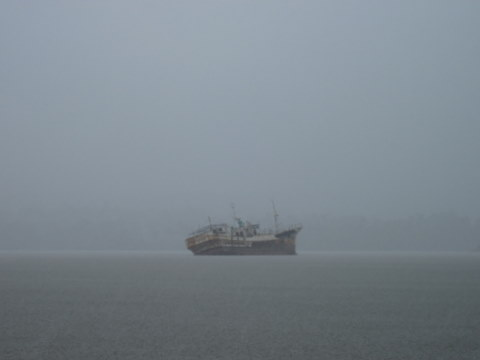
Faut pas me manquer de respect.
J'ai tancé ce grossier personnage et j'ai décidé d'en faire un exemple: son bateau gît maintenant sur le récif. Faut pas m'énerver.
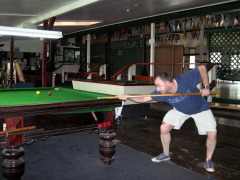
Philippe allie adresse et élégance.
Après cet éclat, j'ai décidé qu'il valait mieux quitter les Fidji pour la Nlle Zélande. 1000 miles de mer calme et plate nous attendent et d'ici une dizaine de jours, nous devrions toucher terre...
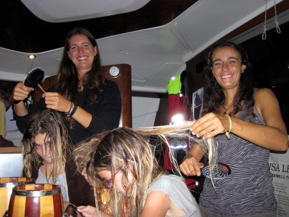
On ne navigue pas avec des cheveux sales.
Avant de larguer les amarres, nous avons toutefois finalisé quelques projets de dernière minute, comme ouvrir un salon de coiffure à bord de LET IT BE ou faire une partie de snooker au Yacht Club devant une assemblée d'admirateurs enthousiastes.
24 novembre 2010 - Vamos a Suva.
Après avoir fait un dernier petit plongeon dans les eaux claires du récif de l'Astrolabe, nous avons mis le cap sur Suva, dernière étape de notre périple fidjien.
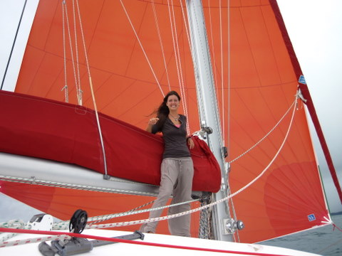
Brise de sud: on sort le spi.
La traversée de 35nm promettait d'être terne, tant le ciel était bas. Toutefois, une petite brise nous portait gentiment, ce qui nous incita à sortir le spi. Voguant à 6 noeuds, nous observions le vent fraîchir lentement, pour atteindre un prestigieux 15 noeuds, avant que ne tombent les premières gouttes d'une pluie qui dure maintenant depuis 3 jours.
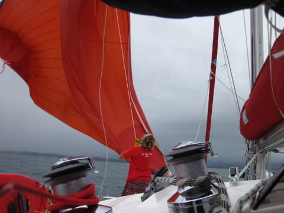
On affale le spi.
Une fois ancrés dans le port pollué de Suva, nous avons entamé les préparatifs de la grande traversée vers la Nouvelle Zélande. 1050 nm (soit +/- 2.000 km) nous séparent de l'île fumante et, pour la première fois depuis longtemps, nous allons sortir de la ceinture des alizés, ce qui fait que les vents imprévisibles pourraient nous assaillir de tous côtés.
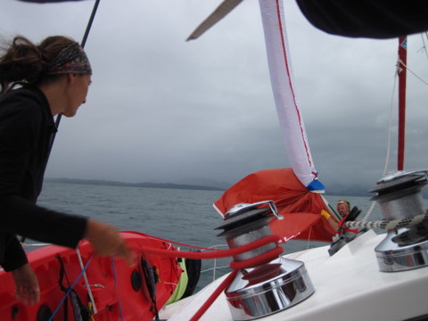
Cécile choque l'écoute, Eric tire la chaussette.
Autre première: pour cette traversée, nous serons 4 adultes puisqu'outre Christel, nous auront le support de Philippe, qui nous rejoint pour l'occasion. A 4, les quarts seront moins pénibles et nous pourrons peut-être profiter pleinement de la croisière.
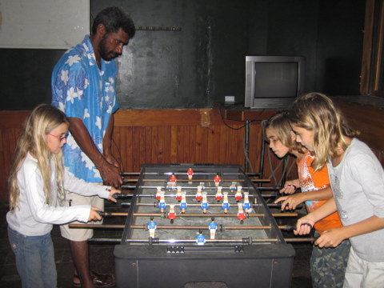
Les enfants ont trouvé un 4ème pour le baby.
Depuis 3 jours, nous sommes donc à Suva, sous la pluie incessante, à acheter la nourriture pour la traversée, à faire le plein de gasoil pour la traversée, à vidanger l'huile des moteurs pour la traversée, à préparer les cabines des hôtes pour la traversée et à mettre à jour le site pour la traversée. Bref, on s'active et, selon toute probabilité, nous larguerons les amarres ce lundi pour 10 jours de mer.
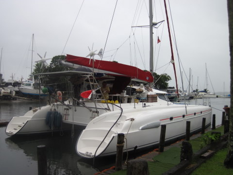
Plein de gasoil.
23 novembre 2010 - Dravuni, visite.
L'île de Dravuni se situe au Nord de l'Astrolabe Reef (récif qui doit son nom à l'Astrolabe, le navire de Dumont d'Urville, qui le découvrit au début du XIXème siècle).
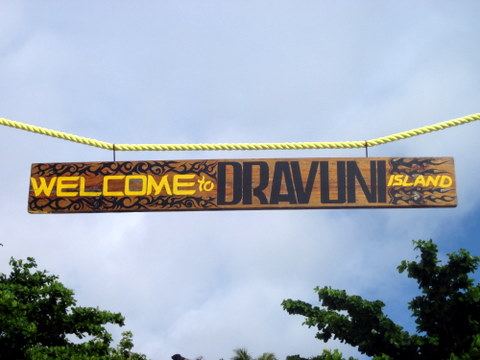
Nous sommes les bienvenus.
Profitant d'une faute d'inattention du maire, nous avons débarqué sur la plage, les bras chargés de racines de Kava afin de nous livrer sans vergogne à un sevusevu de plus. Hélas, c'était sans compter sur la rapidité du bourgmestre qui, une fois remis de ses émotions, nous demanda notre permis de croisière. Ce précieux document que nous avions acquis de haute lutte lors de nos paperasseries d'arrivée était évidemment en sécurité dans le coffre-fort du bateau et il va de soi que nous ne l'exhibions point au premier venu. Bref, on ne l'avait pas sur nous. Après un bref retour au bateau, nous pûmes enfin faire montre de notre plus grande probité et le maire accepta dès lors notre Kava. Ouf.
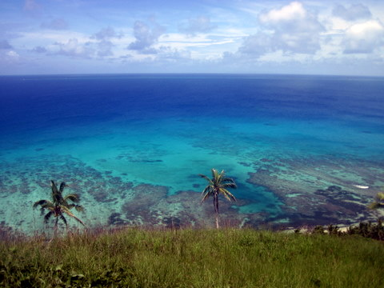
Côte Ouest.
Nantis du blanc-seing du maire (et du chef, car ces deux personnages étaient bien distincts), nous avons pu entamer l'ascension de notre nième point culminant d'une île insignifiante. Enfin, quand je dis 'insignifiante', j'exagère. En effet, peut-on réellement qualifier d'insignifiante, une île sur laquelle on peut prendre de telles photos ? Je vous le demande.
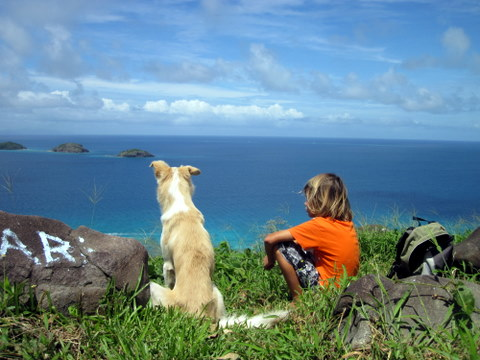
Sidney et Caramel regardent l'horizon.
Quoi qu'il en soit, nous avons gravi les pentes enherbées et encocotiées de l'île jusqu'à son sommet, avant d'en redescendre, sans surprise.
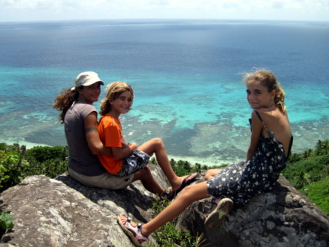
Côte Est.
160. C'est le nombre de photos prises par Cécile lors de l'ascension et la descente. Christel, qui débute en matière de photos d'île, n'a réussi à en prendre que 90. Mais bon, il faut dire que l'endroit s'y prêtait bien. En plus, les habitants avaient du PQ en stock et, émus de notre désarroi, ils ont bien voulu nous en refiler, preuve que la solidarité (un peu sponsorisée, certes) n'est pas un vain mot aux Fidji.
20 novembre 2010 - Yaukuvelevu, Resort fantôme.
Voyageant de concert avec Blue Callaloo, nous écumons l'Astrolabe Reef depuis quelques jours. Nous avons déjà mis à sac deux ou trois villages et coulé une goélette, ne laissant aucun rescapé. Nos cales sont maintenant pratiquement remplies d'or et d'argent et nous comptions sur Yaukuvelevu pour faire le plein de bois d'ébène avant de nous rendre à Suva pour y faire commerce.
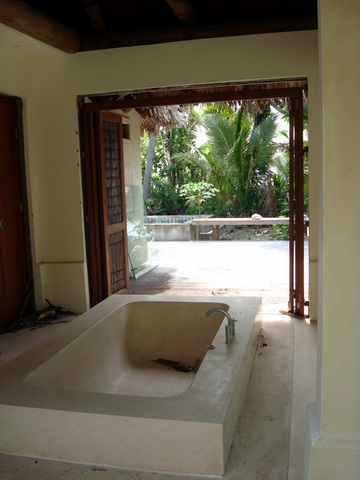
Une baignoire abandonnée.
Aux premières lueurs de l'aube, nous nous approchions de la côte, profitant de la pénombre pour avancer discrètement. Sur le pont, je regardais le rivage à la lunette, dans l'espoir de discerner quelque signe de vie. J'aperçus bien quelques toits de branchage mais point d'âme qui vive. Intrigués, nous avons mis une chaloupe à la mer afin de visiter cette île, autrefois réputée pour son activité foisonnante. Munis de nos mousquets, nous avons échoué notre embarcation sur la plage, puis nous nous sommes dirigés prudemment vers les cocotiers. Nous avons rapidement découvert une hutte, probablement celle du chef du village tant elle brillait par la qualité de ses ornements.
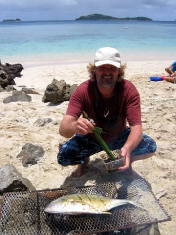
Eric se prépare pour Koh Lanta.
Elle était abandonnée et, à bien y regarder, ne semblait pas totalement achevée. Toutefois, le chef avait à sa disposition une piscine privée avec vue sur l'océan, un bain en marbre de belle taille, une douche extérieure et une douche intérieure en marbre également, ainsi qu'un système d'air conditionné, le tout très agréablement décoré. Un peu plus loin vivait un autre chef, doté du même appartement. Encore plus loin, mais toujours sur la plage, vivaient encore 5 ou 6 chefs, eux aussi royalement logés. Enfin, après une heure d'exploration, nous rencontrâmes un habitant, nommé Edward, qui nous apprit l'infortune du lieu: les investisseurs étaient tombés à court d'argent avant de finir le magnifique complexe hotelier 5 étoiles qui devait briller de milles feux à Yaukuvelevu.
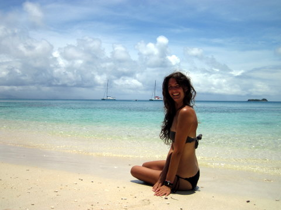
Christel se prépare pour Pirelli.
Et, il faut bien l'avouer, l'endroit est assez 'pittoresque', comme dit Markus, en voulant dire 'magnifique', comme dit Christel. Avec la permission d'Edward, nous avons organisé un BBQ sur la plage, au milieu des bungalows inachevés. Pendant que les enfants jouaient dans l'eau, que Cécile bavardait avec Edward et que Christel glandait sur la plage, je me suis activé pour trouver le bois mort, faire le feu et cuire la carangue pêchée quelques jours plus tôt. Vers 13h, Markus et Tina nous ont rejoints avec des spaghetti aux olives et nous avons gaiement festoyé.
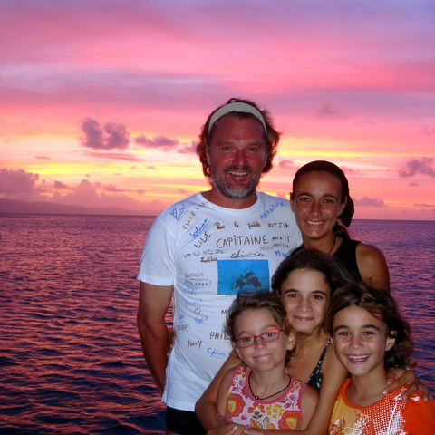
Coucher de soleil flamboyant.
Le soir venu, le ciel s'est embrasé et (on se demande d'où lui viennent ces idées saugrenues) Christel nous a proposé une séance photo sur le pont. Ce projet, d'une simplicité déconcertante, s'est avéré plein de bon sens puisque nous avons pu prendre quelques clichés de toute beauté.
16 novembre 2010 - Retrouvailles.
Je vous l'avais dit, nous avons retrouvé Blue Callaloo après 6 semaines de sevrage. Christel était impatiente de rencontrer Markus, dont nous avions maintes fois vanté les mérites.
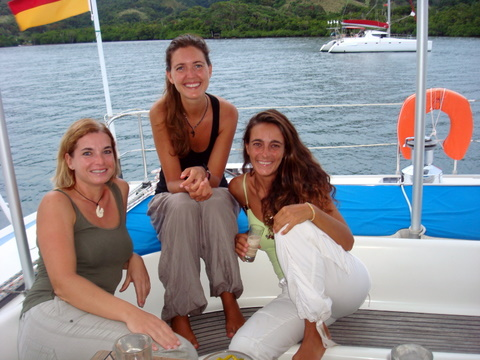
Tina, Christel et Cécile.
Le soir venu, nous avions rendez-vous pour un petit barbecue sans prétention sur Blue Callaloo. Nous avions amené quelques morceaux de poulet et Tina avait préparé quelques pièces de poisson que nous avons braisés sur le charbon hélène de Markus (Si, si, c'est vrai. Le charbon venait de Grèce).
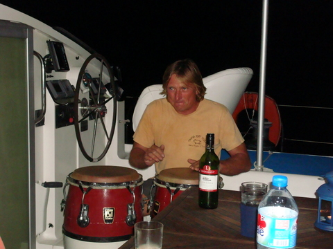
Markus aux congas.
Dès la fin du repas, nous avons entamé les choses pas sérieuses: Markus a pris place derrière les congas tandis que je m'emparais des bongos. Face à face, nous avons entamé une session percussionnée au son de la musique latino. Prises par les rythmes invraisemblables que nous produisions, les femmes se sont alors elles aussi mises à la musique à l'aide des maracas et des klongs (je ne sais pas comment s'appelle ce truc qui ressemble à un klaxon de l'ancien temps et fait 'klong', quand on tape dessus).
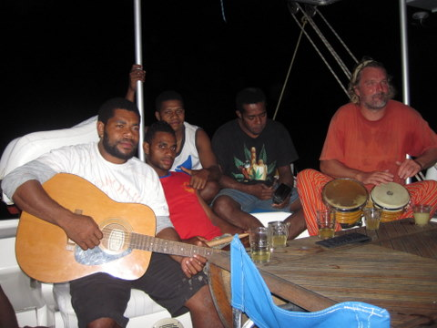
Eric et les Fidjiens.
Après une heure de ce concert, nous avons réalisé qu'une barque s'était subrepticement approchée de Blue Callaloo. Intrigués, nous nous sommes approchés pour constater qu'une dizaine de Fidjiens nous écoutaient depuis un moment, sans oser nous interrompre. Finalement, ils sont montés à bord, se sont séparés en 2 groupes: les hommes d'un côté, les femmes et les ados de l'autre. Markus leur a prêté une guitare et nous avons continué à faire les cons jusque tard dans la nuit. Un peu timides au début, les insulaires se sont lentement lâchés sous l'effet conjoint du komo et des tambours; et tout cela s'est terminé dans un grand éclat de rire.
15 novembre 2010 - Il pleut.
Comme dirait Hugues: "Diablos". On ne saurait mieux dire, en effet. Depuis quelques jours une chape de plomb (en fusion) s'est abattue sur les Fidji. Malgré la chaleur étouffante, le ciel est bas, trop bas, et il pleut des cordes. C'est bien pour nos réserves d'eau douce mais c'est pas top pour faire de belles photos.
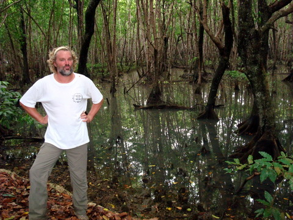
Les marais maudits.
Après nous être retranchés dans le bateau pendant quelques jours, nous avons décidé de tenter une sortie. Nous sommes allés faire le sevusevu dans le charmant village de Matasawalevu. Nous avons offert le Kava au chef du village. Assez curieusement, la principale source de revenu du village est précisément cette fameuse racine, ce qui fait que le chef en question était pratiquement assis sur un tas de Kava...
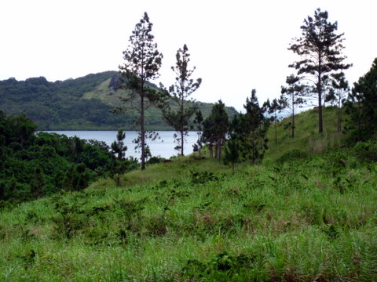
La vallée interdite.
Nous nous sommes ensuite enfoncés dans la jungle fidjienne, bien décidés à nous rendre au resort situé à vingt minutes de marche selon le cacochyme local.
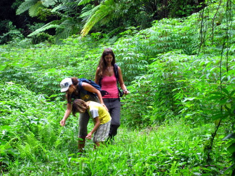
La forêt enchantée.
Après une heure de marche le long d'un sentier, nous avions traversé les marais maudits, la vallée interdite et la forêt enchantée mais nous n'avions pas découvert le resort maléfique. Comme la nuit tombait, nous sommes revenus sur nos pas, pour constater avec plaisir que Blue Callaloo était ancré à côté de Let It Be. A l'heure où j'écris ces lignes, je ne suis pas encore tout-à-fait remis de la fête que nous avons improvisée pour célébrer nos retrouvailles...
12 novembre 2010 - On reste à Kadavu.
Après avoir rapidement visité Kavala Bay, nous sommes partis vers Vuro Island, dans l'espoir d'y croiser quelques raies manta. Avant de partir, nous sommes descendus à terre, dire bonjour à Tui et Gabi et profiter de l'occasion pour dénicher des feuilles de Taro et des noix de coco.
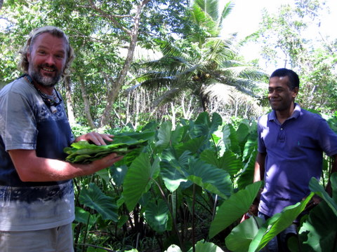
Eric reçoit les feuilles de Taro de Tui.
En effet, après notre expérience gastronomique inoubliable du Papagena resort, je n'avais qu'une idée en tête: m'essayer à mon tour au 'feuilles de taro à la crème de coco'. Bien qu'ayant largement sous-estimé la quantité de feuilles nécessaires à la sustentation d'un honnête homme, j'ai néanmoins, aux dires de Christel, réussi à confectionner un truc qui ressemblait fort à ce qu'on avait mangé deux jours plus tôt.
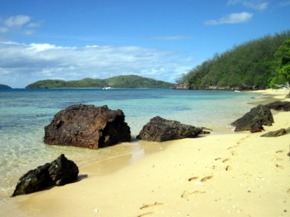
La plage de Vuro.
Vuro Island doit bien mesurer 200m de long et, ne fut-ce que pour la belle plage de sable presque blanc, elle mérite le détour. Malheureusement, une fois de plus, nous avons eu beau palmer à toutes forces autour de l'île, nous n'avons point croisé de raies. En plus, le vent a légèrement tourné pendant la nuit, rendant le mouillage des plus bruyants et, par voie de conséquence, des plus indormables.
11 novembre 2010 - Nauciwai, pas d'armistice pour Let It Be.
Il existe deux catégories de voyageurs: ceux qui arpentent et ceux qui quadrillent. Nous, on explore. Sur GoogleEarth, nous avions repéré, au fond de la baie, un estuaire que nous nous étions promis de visiter à la première occasion. Et, justement, la première occasion se présenta ce matin. Avant de partir, je suis allé pêcher quelques poissons afin de ne pas arriver les mains vides à Nauciwai, le village qui défend l'entrée du delta.
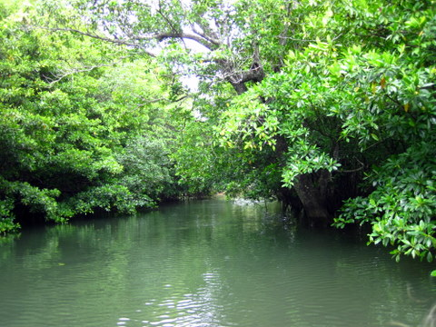
La mangrove.
Quittant LET IT BE sans nous retourner, nous sommes partis en annexe, bien décidés à remonter la rivière jusqu'aux sources du Nil. Après avoir franchi le pont qui enjambe le fleuve au niveau du village, nous nous sommes enfoncés dans l'inconnu. Je dois dire que les palpitations de nos coeurs n'avaient d'égales que les cavitations des pâles du moteur. Aussi, faisant fi de tous les conseils qu'on nous avait prodigué, je décidai de couper le moteur et de poursuivre à la rame, inconcient des dangers qui nous guettaient.
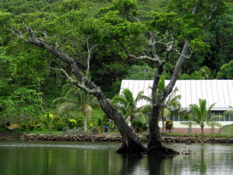
Retour au village.
De fait, la mangrove est un écosystème très particulier. Les palétuviers forment une barrière infranchissable à l'homme mais abritent une faune certes invisible mais néanmoins audible. Nous avancions lentement au bruit des rames glougloutant dans l'eau quand soudain, au détour d'un méandre, nous avons pu apercevoir un héron, le fameux héron des mangroves.
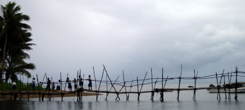
Le pont.
Après avoir progressé dans un silence de muerte pendant quelques centaines de mètres, nous dûmes rebrousser chemin car la rivière devenait impraticable. Rompus aux techniques de survie en milieu hostile, nous connaissons nos limites et nous avons préféré ne pas mettre en danger la vie des enfants. Cependant, malgré notre discrétion de Sioux, les habitants du village, sans doute alertés par les paparazzi qui nous épient à longueur d'année, avaient eu vent de notre escapade, si bien qu'à notre retour, le pont était plein d'écoliers qui nous haranguaient.
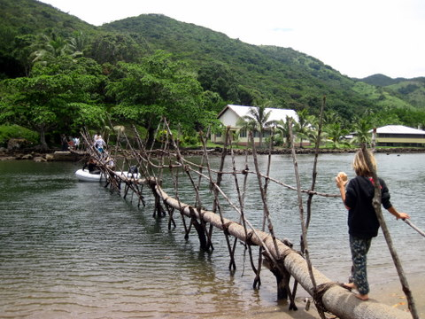
Sidney retourne au dinghy, coincé sous le pont.
Comme tous le monde, me faire haranguer de temps à autre ne me déplaît guère. Aussi avons-nous pris notre temps pour faire notre sortie triomphale. Il faut dire que le dinghy passait à peine sous le pont et que la marée montant, nous avions toutes les peines du monde à faire passer le moteur sous l'édifice. Enfin, au prix d'efforts insensés, nous parvînmes à nous libérer et à rejoindre notre bateau, non sans avoir reçu des noix de coco et quelques bananes, en échange de notre poisson.
8 novembre 2010 - Papageno Resort, palmes, masque et bûcher.
Il y a 10 nm entre la baie de Namalata et le Papageno Resort, notre destination d'aujourd'hui. En chemin, on serpente entre les patates de corail et on peut même s'arrêter et jeter l'ancre pour déjeuner le long de la barrière.
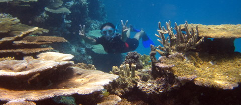
Cécile, très à l'aise sous l'eau.
C'est ce que nous avons fait, au grand plaisir de Christel. Il faut dire que les explorations aquatiques sur le tombant de la barrière, côté océan, sont toujours très spectaculaires. L'eau est en général très claire et la faune très active. Il faut cependant être attentif aux courants et au ressac qui peut vous propulser sur le corail. Heureusement, rien de tout cela ne nous est arrivé. Au contraire, comme la marée était haute, on a pu ancrer le dinghy sur la barrière et plonger pour admirer le corail d'une étonnante vigueur.
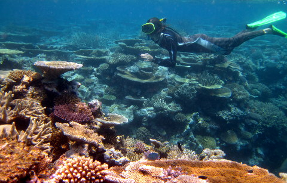
Christel est descendue à -2m.
Nous avons ensuite mangé une petite tartine sur le pouce avant de nous diriger vers le Papageno Resort, où nous fûmes moyennement bien accueillis.
Pourtant, l'endroit est réellement paradisiaque: il s'agit d'un hôtel d'une capacité de 15 à 20 personnes, composé de quelques bungalows et d'un restaurant, dans une vaste propriété donnant sur la mer. Les propriétaires sont très soucieux de la tranquillité de leurs clients, ce qui explique l'accueil relativement froid auquel nous avons eu droit. Et, de fait, de la plage, on ne distingue absolument pas la présence d'un hôtel, à tel point qu'on se demandait si l'on était au bon endroit... Quoiqu'il en soit, dès notre arrivée à terre, nous avons fait part au manager de notre volonté de manger dans son établissement, et nous avons entamé une petite visite guidée de la propriété. En front de mer se trouvent les bungalows des invités, cachés par une végétation luxuriante et des dizaines de fleurs plus colorées les unes que les autres. En retrait, il y a un potager géant dans lequel poussent tous les légumes et fruits que l'on trouve au menu du restaurant.
Outre le manioc et le taro, on y trouve du céleri, des tomates, des concombres, de la salade, des carottes, des haricots, des aubergines, des patates douces, des citrons, des oranges, des mangues, des ananas et, évidemment, des condiments comme le basilic, l'aneth, le romarin, etc.
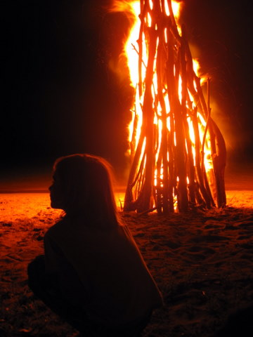
Sidney devant le bûcher.
C'est bien simple, l'hotel vit en quasi autarcie sur le plan de la nourriture: outre le potager, il y a aussi un poulailler et, évidemment, la mer pour pourvoir le restaurant en poissons frais.
Le soir venu, nous nous sommes rendus dans le magnifique restaurant dont le mobilier est en Pandanus. Nous y avons mangé un lobo de très bonne facture accompagné entre autres de feuilles de taro bouillies à la crème de coco, ce qui, croyez-moi sur parole, est un met divin. Ensuite, nous sommes allés boire le kava puis nous avons assisté à un spectacle de chants et danses fidjiennes au coin d'un grand feu crépitant sur la plage. Tout cela pour 6€ par adulte et 2€ par enfant. Excusez-nous si on ne revient pas tout de suite en Belgique.
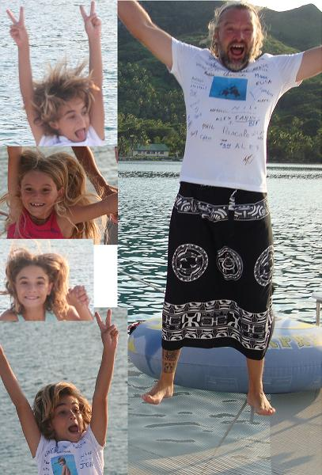
On est content, on vole.
7 novembre 2010 - Pauvre Christel.
Depuis qu'elle est arrivée, Christel a pu engranger beaucoup d'expériences nouvelles. La visite au Yasawa Group lui a permis de découvrir les plages de sable blanc, les coraux multicolores, les villages typiques et, évidemment, le plaisir de se déplacer en voilier 5 étoiles. J'ai même poussé le professionnalisme jusqu'à pêcher 3 poissons sur une traversée de 20 nm afin de lui permettre de vraiment découvrir de nouvelles sensations.
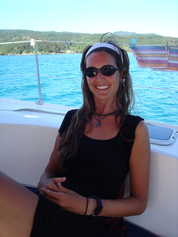
Christel garde le sourire.
Hier encore, nous avons effectué une belle traversée de 50 nm entre Viti Levu et Kadavu. Propulsé par ses belles voiles toutes gonflées de vent, LET IT BE voguait à près de 6 noeuds sur une mer d'huile. Vraiment Christel a de la chance. Mais cela ne suffit pas. Elle veut voir des dauphins.
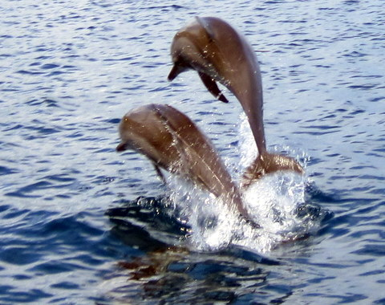
Les dauphins sont espiègles.
Justement, ce matin, pendant que Cécile et Christel jouaient à l'institutrice à bord du bateau, j'ai enfourché le dinghy afin d'explorer les alentours. Et, évidemment, c'est lors de cette exploration solitaire que j'ai soudain vu annager une horde de dauphins joueurs qui m'ont régalé de leurs cabrioles pendant un bon quart d'heure. Je dois avouer que nous avons vu de nombreux dauphins depuis que nous sommes partis. Mais jamais je n'avais pu assister à leur spectacle de si près. Vraiment génial !!! Mais restons modeste. Pensons aux gens qui, comme Christel, n'ont toujours pas vu de dauphins en liberté. Pauvre Christel !!!
5 novembre 2010 - En route pour Kadavu.
De Denarau à Kadavu, il y a 90 nm à vol d'oiseau. Cependant, à moins de disposer d'un bateau volant, la route maritime est un rien plus longue: il faut contourner l'ouest de Viti Levu, franchir la passe dans la barrière de corail, puis remonter au vent sur près de 100 nm. Inutile de préciser que ce genre d'exploit n'est pas à la portée du premier venu.
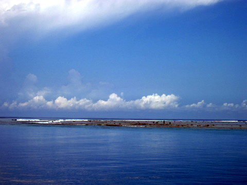
La passe Sud-Ouest de Viti Levu.
Voilà donc près de 3 jours que nous sommes partis de Denarau. Le premier jour, nous avons fait 35 nm sous pétole, en finissant dans une petite baie au sud de Viti Levu. Le deuxième jour, 24 nm en 8 heures, en louvoyant pour remonter au vent (25 noeuds quand même) et finir dans une autre petite baie, toujours au sud de Viti Levu. Que du plaisir !!!

Baie de Naboutini, by day.
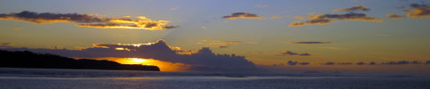
Baie de Naboutini, by night.
Enfin, nous avons décidé de lever l'ancre à 6:30 du matin afin de quitter la grande île en direction de Kadavu. Et là, miracle, nous avons eu droit à un petit vent de ENE, tout-à-fait seyant pour faire la traversée en un travers (de porc piquant) des plus agréables.
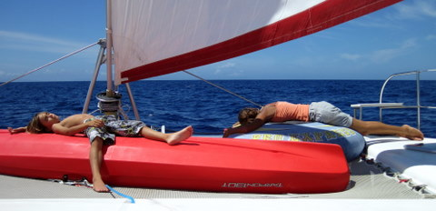
Activité fébrile sur le pont du bateau.
Kadavu, nous voici !!!
2 novembre 2010 - Mana, fin des Fidji de l'ouest.
Après Vanua Lailai et son récif corallien de toute beauté, nous avons pénétré dans le lagon de Mana par une étroite passe sinueuse, heureusement bien balisée.
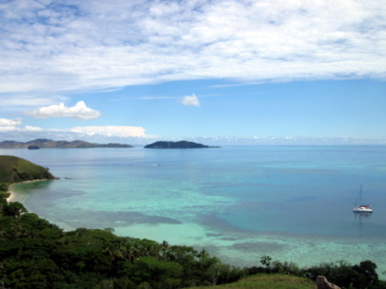
Trois heures de marche pour prendre cette photo.
Après avoir mouillé par 10m de fond, j'ai plongé dans l'onde bleue afin de m'assurer de la bonne tenue de l'ancre. A peine dans l'eau, j'ai été pris de convulsions saccadées, essayant en vain de me maintenir à la surface. A vue de nez, je dirais que la température de l'eau devait avoisiner les 35°C. Quel choc !
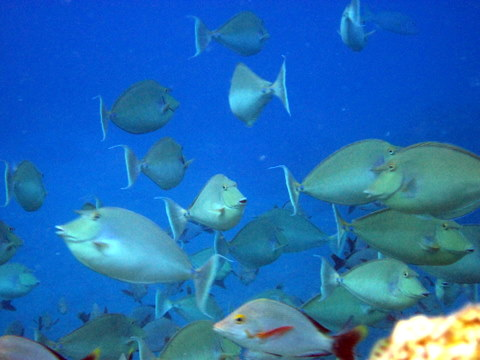
Dans la passe, un banc de nasons.
Enfin, l'ancre tenait bien et nous sommes partis en exploration jusqu'au sommet de l'île, afin de faire de belles photos. Pendant que nous escaladions les pentes brûlantes de l'île, les enfants pagayaient sur le kayak en explorant le lagon. Après plusieurs minutes de marche, nous avons enfin trouvé un bar 'pieds dans l'eau' où nous avons bu une bière en riant de la blancheur des touristes déambulant sur la plage.
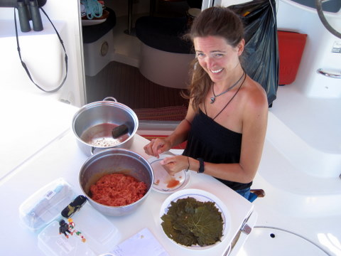
Christel prépare les feuilles de vigne.
Dès le lendemain, nous sommes rentrés précipitamment sur Denarau, afin de remplir notre bateau des denrées les plus diverses. En effet, les prévisions météo annonçaient un temps extrêmement calme sur l'ouest des Fidji pendant 2 ou 3 jours. Cela signifie que nous pouvons rejoindre Kadavu et l'Astrolabe Reef dans des conditions acceptables. En effet, ces îles sont situées au Sud de Viti Levu, 80 nm à l'est de notre position actuelle. Quand les alizés sont établis (c'est-à-dire presque toujours), il nous faut affronter des vents de face de 20 à 25 noeuds et une houle de 2 à 3 m.
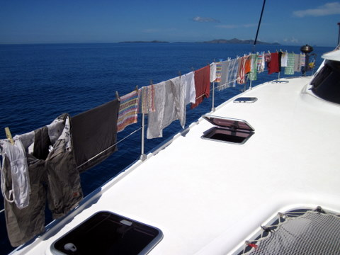
Cécile a fait sécher le linge.
Bref, nous avons fait un touch'n go à Denarau pour expédier les formalités du genre remplir le frigo, acheter de l'essence, envoyer des lettres et manger une pizza. Ensuite, nous sommes repartis en faisant du cabotage pour rejoindre Beqa, île située au sud de Viti Levu, sur la route de Kadavu, et étape incontournable pour les plongeurs bouteille que nous sommes. La mer étant très calme, Christel nous a préparé des feuilles de vignes pendant que Cécile faisait la lessive en profitant de l'abondance de courant généré par les moteurs de propulsion (eh oui, sans vent, on marche au moteur et donc on a plein d'électricité et plein d'eau douce grâce au déssal).
1er novembre 2010 - Vanua Lailai, beau au-dessus, beau en-dessous.
Après l'horrible plage de sable blanc de Likuliku, nous avons découvert la très laide plage de Vanua Lailai. Je vous laisse juge...
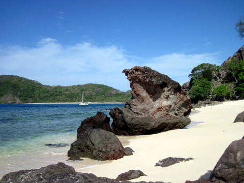
La plage et les rochers.
La particularité de cet endroit est d'être inhabité. Comme nous sommes seuls (sauf quand un paquebot débarque avec 50 snorkeleurs, mais vu l'exiguité des lieux, il ne reste pas longtemps), nous jouissons d'une paix royale. Pendant que les enfants s'amusent à la plage, je m'amuse sous l'eau.
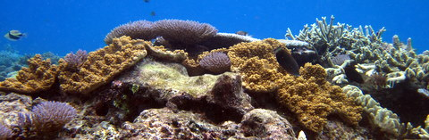
Les fonds sous-marins.
Il faut dire que la plage est bordée d'un récif corallien de toute beauté, habité par des créatures étranges. Avec tout le poisson qu'on a pêché récemment, nous avons assez pour tenir un siège, aussi ai-je décidé de troquer mon harpon contre un appareil photo. Le principe reste cependant le même: s'approcher des poissons le plus possible, puis les mitrailler sans relâche.
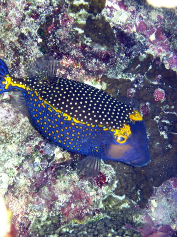
Un poisson coffre.
Comme l'eau est à 29°C, je peux rester immergé pendant des heures, ce qui me permet de prendre parfois des clichés acceptables. Et les femmes ? Que font-elles pendant que les enfants s'amusent et que je travaille ? Je vous laisse deviner.
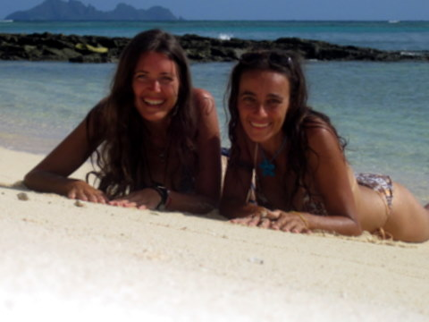
Les bimbos sur la plage
Et voilà: naturellement, elles profitent des plages désertes pour se la jouer starlette, sans crainte de voir leur grotesque performance finir dans les tabloïds.
29 octobre 2010 - Likuliku, lobo sur la plage.
Cela faisait quelques jours que nous cherchions une plage grise remplie de galets et de déjections canines pour montrer à Christel que tout n'est pas rose dans la vie. En effet, depuis qu'elle est arrivée, tout se passe tellement bien que cela devient suspect. A vue de nez, la plage de Likuliku semblait remplir les conditions précitées et j'avais bon espoir de pouvoir enfin dévoiler à notre invitée le vrai visage des Fidji.
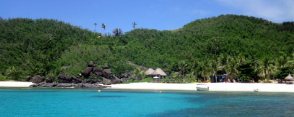
Plage de Likuliku, avec son resort incorporé.
C'est maintenant chose faite et Christel sait à quoi s'en tenir. Nous avons même été à terre afin de bien observer la vermine nauséabonde qui règne sur la plage et pour acheter de la farine pour faire notre pain quotidien.
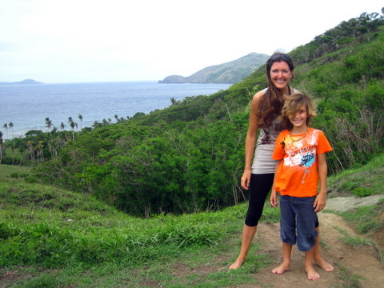
Sur le chemin du village, on passe par un col à plus de 6.000m.
Le tenancier du resort nous proposait le kilo de farine à 3.5 F$, ce qui tient plus de l'extorsion que du commerce. Nous avons donc décidé d'aller jusqu'au village, situé de l'autre côté de l'île, afin d'acheter notre meunerie.
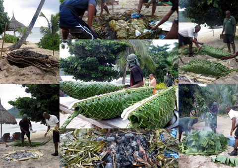
Les diverses étapes de la préparation d'un lobo.
En chemin, nous avons constaté que le resort préparait ce qui ressemblait fort à un hima ou four marquisien. De fait, ils préparaient un lobo, terme que l'on peut traduire approximativement par "four fidjien" et qui consiste à faire un trou dans la plage, juste à côté du terrain de volley ball, puis de faire un grand feu avec des pierres volcaniques, puis d'attendre la fin de la combustion, puis d'y étendre une grille métallique, puis d'y disposer des paniers tressés remplis de mets divers, puis de couvrir de feuilles de bananier, puis de mettre une bâche en plastique, puis de couvrir de sable, puis d'attendre quelques heures, puis de tout déballer, puis de tout manger, sauf la grille métallique, évidemment. Comme cela nous rappelait d'excellents souvenirs de ripailles et d'orgies crapuleuses, nous nous sommes inscrits.
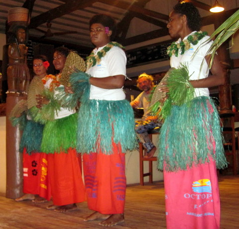
Les danseuses et Eric, au bar naturellement.
Bien nous en pris puisque nous avons pu assister à un petit spectacle de danse et chant avant de déguster le poulet fumé et jets de fougères des bois, un truc que je n'avais jamais mangé mais qui est délicieux. Certains diront qu'on se la coule douce aux Fidji, où la température grimpe doucement avec l'arrivée de l'été. Moi je dis qu'ils ont raison.
27 octobre 2010 - St Jacques de Lagonbleu, supermarché en plein air.
Comme prévu, nous sommes arrivés ce mardi dans un endroit idyllique, dont la beauté a marqué plus d'une génération de romantiques: c'est en effet ici qu'a été tourné un film mémorable: "Le lagon bleu", avec Brooke Shield et un blondinet. Je suis sûr que tous les quadras s'en souviennent: ces deux enfants naufragés sur une île déserte (mais très belle) qui grandissent ensemble dans une communion d'esprit loin des mesquineries qui caractérisent notre société matérialiste enfermée dans un carcan gnagnagna et gnagnagni... Bref, c'était génial et je dois reconnaître que l'endroit est sympathique même s'il me faut vous avouer qu'il y a ici plus de 'resorts' que d'habitants.
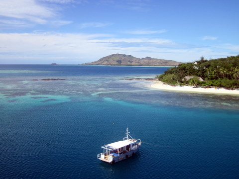
Photo aérienne prise par Cécile d'un ballon dirigeable.
Nous avons profité de la quiétude des lieux pour placer (enfin diront certains) la girouette en tête de mât. Dès l'opération effectuée, nous avons pu confirmer notre diagnostic: l'ancienne girouette était bien morte, la nouvelle fonctionne parfaitement:-)) Merci Alexis !!!
Notre panier de la ménagère.
Comme nous avons quitté Nadi depuis près de 15 jours, nous n'avons plus de légumes frais. Heureusement, il y a une plantation à deux pas. On s'y rend en dinghy et l'on déambule dans le grand jardin avec Toki, le propriétaire, qui nous demande ce que l'on veut. Nous, très simplement, on voulait de tout...
Christel râpe la coco.
Ensuite, nous sommes revenus à bord pour préparer le repas du midi: après le whalou à la vanille d'hier, nous avons préparé du whalou à la tahitienne. Pour ce faire, outre le poisson, il convient d'avoir du citron, des légumes et, évidemment, des noix de coco. On casse la noix en deux et on râpe la pulpe avant de la presser pour en extraire le lait qui servira de sauce pour adoucir le poisson mariné au citron. Vous pourrez demander à Christel, c'est un régal !!!! Demain, on mange du whalou à la muqueca. Je vous en dirai plus dès que j'en aurai envie.
25 octobre 2010 - Yasawairara, pêche miracle.
Après ces quelques jours passés à Yasawairara, nous devions hélas reprendre notre bâton de pèlerin pour aller à Saint Jacques de Lagonbleu. Avant de partir, je m'étais promis d'offrir un poisson à Nix et Cécile avait été invitée à cueillir quelques aubergines dans le jardin de Sera.
La baie de Yasawairara va manquer à Christel.
J'ai déposé Cécile à la plage et je suis parti harponner sec, si j'ose dire, pendant que Christel faisait la classe à bord. Dès que l'annexe fut remplie de 2 poissons, je revins à terre pour les donner à Nix et l'inviter à visiter le bateau en compagnie de sa petite famille.
Sera et Nix visitent le bateau.
Une fois à bord, ils étaient enchantés et nous ont offert à chacun un petit cadeau. Pour ma part, j'ai reçu un magnifique collier de coquillages, avec lequel j'ai l'air d'un guerrier cannibale, mais presque. Nous avons ensuite levé l'ancre, après les avoir reconduits à terre. La traversée de 20nm s'annonçait plaisante, avec une petite brise de 15 noeuds soufflant par le travers.
Cécile se prépare à lever de volumineux filets.
15 minutes après notre départ, nous avons attrapé une carangue d'environ 40cm de long. Modeste prise mais toujours agréable, surtout avec une sauce à la vanille. A peine la carangue vidée et emballée, nous avons constaté que la ligne tribord mordait à son tour. Cette fois, nous ramenâmes un beau whalou, d'environ 80 cm de long à bord. Le temps de le suspendre au portique et, paf, la ligne bâbord se remit à frétiller. Un énorme whalou y était accroché !! Il me fallut quelques minutes pour ramener ce gros lourdeau d'une quinzaine de kilos à bord.
Yes !! (Et on voit bien mon collier porte-bonheur)
Ayant assez pêché, nous rentrâmes les lignes et, dès notre arrivée, Cécile dépeça le gros whalou pendant que je mettais la carangue au surgélateur. Nous partîmes ensuite à la recherche d'un local pour lui refiler le petit whalou puisque nous avions désormais assez de poisson pour nous, les autres bateaux du mouillage et même les insulaires... C'est ainsi que j'ai découvert les pouvoirs magiques du collier qu'on m'avait offert ce matin.
24 octobre 2010 - Yasawairara, à chacun son métier.
Depuis toujours, les gens qui fréquentent Cécile se demandent où elle place les quantités invraisemblables de nourriture qu'elle ingurgite. Moi qui la connais bien, je peux vous le dire: c'est un mystère. Pas plus tard qu'hier, j'avais cuisiné un beau gigot d'agneau de 2 kg dont Cécile s'est emparée vers la fin du repas, alors qu'il restait assez de viande pour nourrir le village à côté duquel nous mouillons. Offrant alors un spectacle digne de la savane, elle a méthodiquement rongé les chairs jusqu'à ce que l'os blanchisse. Elle n'a rien laissé.
Cécile aime le gigot.
Après cela, la classe des enfants devait commencer. Je dois dire que nous comptions sur Christel pour aider un peu les enfants durant leurs interminables devoirs. Nous n'avons pas été déçu: elle s'est montrée à la hauteur de la tâche, faisant travailler aussi bien Kenya que Sidney que Syr Daria, lesquels sont d'ailleurs enchantés d'avoir affaire à elle plutôt qu'à moi, pour d'obscures raisons de patience et de gentillesse. Mais qu'importe, c'est moi qui range les photos et voici celle que j'ai trouvé ce matin:
L'école à bord.
Evidemment, faire le clown avec les enfants est plus agréable que travailler avec rigueur. Quoi qu'il en soit, dès la classe terminée, nous avons décidé de visiter le village. D'ordinaire, les enfants rechignent un peu à se rendre à terre mais, cette fois, Cécile put les convaincre en arguant du fait qu'ils pouvaient glander sur la grande plage de sable fin pendant que les adultes visitaient.
Encore une plage morose.
Nous avons, comme d'habitude, donné la drogue au chef du village, en échange de quoi nous avons pu flâner entre les huttes. Au détour de l'une d'elle, nous avons rencontré une brave ménagère qui faisait le pain, c'est-à-dire un mélange de manioc rapé et lait de coco. J'ai habilement réussi à esquiver la proposition de goûter cette chose mais Cécile n'a pas pu dire non.
Cécile goûte le pain traditionnel fidjien.
Si vous regardez attentivement la photo ci-dessus, vous observerez que la moue de Cécile ressemble beaucoup à celle de Thierry Lhermitte dans "Le père Noël est une ordure" quand il goûte aux Doubichoux de Sofia. Ici aussi, c'était offert de bon coeur mais c'était infect. Cela ne nous a pas freiné dans notre élan et, après avoir recraché discrètement, nous avons poursuivi notre visite.
Repas local.
Nous avons croisé Sera et Nix qui occupent une charmante petite masure au toit de chaume (pour ceux que ça intéresse, les fondations sont en cocotier, la charpente en bois de fer et le chaume en paille). Ils nous ont invité à manger et, après m'être assuré qu'il n'y avait pas de pain au menu, j'ai accepté. Nous avons eu droit à un excellent poisson, servi avec, ô surprise, du manioc arrosé de lait de coco citronné, ainsi qu'un shutney de piment. Pas mauvais du tout.
Ca m'a réconcilié avec la vie car figurez-vous que, ce matin, j'avais décidé d'enlever les algues collées au dinghy. Pour ce faire, je vais sur la plage, je beache, j'enlève le moteur, je retourne le dinghy et je frotte avec une éponge en fer et du sable. Comme notre moteur de 20CV est beaucoup trop lourd pour que je puisse le déposer seul contre un cocotier, j'avais opté pour l'échange des moteurs à bord. J'ai commencé par enlever le gros moteur de 20CV à l'aide du palan prévu à cet effet. J'ai ensuite saisi le moteur de 5CV et, enjambant les boudins de l'annexe, je me suis dirigé, tout en portant le moteur, vers l'extrémité du dinghy, afin d'y fixer le moteur. Hélas, le vent souffle à 20 noeuds pour l'instant, si bien qu'un à-coup inopiné de l'embarcation m'a fait choir dans l'eau. Sans penser à ma vie, j'ai tout fait pour sauver le moteur qui m'entraînait inexorablement vers le fond.
Heureusement, Cécile n'était pas loin et, sans attendre, elle sauta dans l'annexe et vint saisir le moteur que je tentais à tout prix de maintenir à la surface, tout en essayant moi-même de m'agripper au bateau. Enfin, plus de peur que de mal, Cécile a pu récupérer le moteur, le hisser hors de l'eau avec ses petits bras musclés en attendant que je m'extirpe de l'eau pour l'aider à le placer sur le dinghy. Après quoi, nous fûmes stupéfaits de constater qu'il fonctionnait encore.
21 octobre 2010 - Sawa-I-Lau, on s'active.
En cette belle journée du 21 octobre 2010, nous avions décidé de placer notre nouvelle girouette en haut du mât. C'est pourquoi, dès le matin, nous nous sommes rendus aux grottes sous-marines. En effet, la présence d'un paquebotje dans la baie avait engendré dès potron-minet une activité fébrile des autochtones, soucieux de soutirer le maximum d'argent possible aux touristes apeurés. Ainsi, nous avions pu constater du pont du LET IT BE, un ballet de canots qui sans être suspect, semblait indiquer un point de ralliement secret, signe indubitable de la présence d'un haut-lieu du tourisme local. Nous avons suivi le flot et nous sommes retrouvés dans les grottes sous-marines (et secrètes, cela va de soi).
Début de la plongée vers le néant.
Moyennant 10$ fidjiens, soit 4€, nous avons pu, nous aussi plonger dans les eaux troubles et verdâtres. Cécile et moi, rompus aux conditions de vie difficiles, n'avons eu aucun mal à nager dans le trou glauque, ni même à plonger pour rejoindre les cavités obscures (et sombres) qui se succèdent à mesure qu'on s'enfonce dans la montagne. Christel, un peu hésitante au début, a continué à hésiter ensuite. Devant notre aisance surnaturelle, elle a eu peur de passer pour une mauviette. Aspirant une dernière bouffée d'air visqueux, elle s'est à son tour élancée sous l'eau, dans le noir, espérant trouver une cavité aérée au bout de sa plongée. Et effectivement, après plus de 50cm, elle était de l'autre côté, le masque rempli d'eau, en proie à une crise d'angoisse. Bref, elle est revenue aussitôt, le coeur battant et le souffle court. Mais elle l'a fait ! Elle a surmonté ses peurs les plus indicibles ! Bravo Christel !!!
Poissons de platier.
A peine de retour sur le bateau, nous avons entamé qui la classe qui le repas, afin d'être prêts pour replacer la girouette dès le début de l'après-midi. Vers 15h, après la sieste, nous nous sommes séparés en deux groupes: les garçons sont allés pêcher pendant que les filles visitaient le village. De la sorte, on pourrait se retrouver dès 17h pour fixer la girouette en haut du mât.
Rivage aux abords du village.
Pendant que j'apprenais à Sidney les secrets ancestraux de la pêche au harpon, Cécile et sa petite troupe débarquaient au village peuplé d'indigènes jadis cannibales. Prudemment, elles se sont d'abord rendues chez les femmes qui fabriquaient les colliers de bienvenue pour les touristes du paquebot.
Cécile et notre fournisseur de bananes.
Elles ont rencontré Jo, qui s'est mis à faire du plat à ma femme. Heureusement pour lui, j'étais fort occupé avec les poissons, sans quoi, il n'aurait jamais osé se permettre de telles familiarités.
Cécile plante du manioc.
Ensuite, les filles ont donné les racines de Kava à la femme du chef et sont parties dans le secteur pour planter du manioc. Cécile, toujours aussi populaire dans ces îles, a même maintenant l'honneur d'avoir un plant à son nom. Peu après, elles sont passées par la poissonnerie où Christel a pu admirer un poisson chirurgien de belle taille. Sa proéminence frontale lui vaut le nom de nason (et, pour la petite histoire, ce poisson est de la même famille que le fameux Umé Taré que je flèche depuis les Gambier).
Christel aime le nason.
Vers 17h, nous nous sommes tous retrouvés sur LET IT BE, juste à temps pour poser la girouette en tête de mât. Hélas, la visibilité baissait et le vent fraiichissait graduellement. Nous avons donc postposé les opérations techniques et opté pour la (re)visite à terre, afin d'observer le petit spectacle de danses tribales organisé sur la plage. Hélas, le spectacle fut de courte durée pour nous. Un contre-amiral de la flotte Cooks Cruises (le paquebot) surgit subitement pour nous informer que c'était un ballet privé, financé par sa compagnie, et qu'en conséquence nous étions les malvenus. Seule la présence des filles m'a empêché de rosser ce prétentieux. Et, de toutes façons, on voyait très bien de l'extérieur de leur misérable enceinte...
20 octobre 2010 - Sawa-I-Lau, c'est magnifique.
Vraiment, je me demande pourquoi on est venu ici alors qu'il y a la même chose en France. Nous sommes cette fois au mouillage près de Sawa-I-Lau, endroit réputé pour ses grottes sous-marines de toute beauté. Mais nous aimons sortir des sentiers battus, alors, plutôt que nous jeter sur la première attraction touristique venue, nous avons préféré explorer méthodiquement les lieux qui nous entourent.
La plage à tribord.
Il faut dire que nous mouillons dans un décors grandiose et insolite. A bâbord, il y a un platier de corail défendant une plage de sable fin. A tribord, il y a un platier de corail défendant une plage de sable fin. Devant nous, il y a aussi un platier de corail mais pas de plage.
Les enfants plongent dans le lagon.
En fait, pour résumer, on peut dire qu'on est entouré de récifs coralliens et de plages de sable fin. Heureusement, il y a aussi des rochers finement ciselés qui bordent le lagon et qui offrent de bons tremplins pour nos enfants.
Guerre de position entre les bleus et les jaunes.
Dans l'eau, par contre, rien de nouveau: il y a des coraux et des poissons. La seule petite différence avec les autres snorkeling réside peut-être dans la stupéfiante variété des formes et des couleurs. C'est vraiment étourdissant. Je pense que c'est Chrystel qui a le mieux décrit la situation: "C'est magnifique".
Chrystel, très photogénique décidément.
18 octobre 2010 - Malakati, tous à l'école.
Chaque matin, c'est la même chose: alors que nous émergeons péniblement d'un sommeil trop calme, nous entendons des cris provenant du rivage. "Ceciliaaaaa, Céciliaaaaa...".
Encore un mouillage glauque et terne, égayé seulement par la présence de LET IT BE.
Malakati est un village qui possède de beaux édifices, telle l'antenne GSM ou la magnifique église. L'absence de voies carrossables est compensée par le très faible nombre de voitures, ce qui simplifie les problèmes de voirie. Il y a un supermarché de 20 m² et un terrain de rugby. Mais d'école, point. Les enfants doivent se rendre à Nacula, le village voisin, situé à l'autre bout de la baie.
Les enfants vont à l'école.
Cécile, après avoir assisté à la messe dominicale, est devenu une vedette à Malakati, si bien que les jeunes malakatistes qui passent devant notre bateau crient son nom, dans l'espoir de la voir apparaître sur le pont. Que ce soit le matin, à l'aller, ou le soir, au retour, nous avons droit aux cris des fans.
L'entrée de l'école.
Cécile a résisté pendant une journée entière, avant de finalement s'avouer vaincue et, satisfaisant la volonté de ses jeunes admirateurs, a accepté de les accompagner à l'école en ce mardi matin.
Cécile et ses petits écoliers.
Avec Christel, Kenya et Syr Daria, elle a parcouru le chemin des écoliers jusqu'au temple du savoir où les enfants ont entonné une petit ode à la gloire de Céciliaaaaa qu'ils avaient composée pour l'occasion.
Cécile, professeur d'un jour.
Très émue, Cécile s'est alors lancée dans un petit tour d'horizon des dernières nouveautés de la langue française, dont ces petits fidjiens sont très friands, cela va de soi. Devant un parterre de têtes blondes aussi attentives qu'émerveillées, Cécile a expliqué ce que nous faisions avec notre beau bateau dans leur baie.
Chrystel, Kenya et Syr Daria posent pour la photo souvenir.
16 octobre 2010 - Malakati, retour à la normale.
Depuis que Christel est arrivée, il fait mauvais, au grand plaisir des fidjiens. Hormis en Martinique, nous n'avions jamais vu cela: 4 jours de pluie consécutifs et des températures avoisinant les 25°C. Pour un mois d'octobre aux Fidji, c'est exceptionnel.
Nonobstant, nous avons pris la mer sous un petit crachin, en direction du Nord-Est et du fameux Yasawa Group, archipel aux mille îles, plus magnifiques les unes que les autres. Après une première halte sans histoire (et surtout bien plombée), nous avons mis le cap sur la baie de Malakati, où nous avons jeté l'ancre par 4m de fond de sable, sous les yeux éberlués de Christel.
La baie de Malakati.
Quand je dis éberlués, je veux dire incrédules, stupéfaits, ou, éventuellement, interloqués, si tant est que des yeux puissent être interloqués. Nous nous sommes immédiatement rendus au village afin de célébrer le Sevusevu. Nous avons cérémonieusement refilé du Kava à la femme du chef (car celui-ci jouait au poker dans le village voisin).
Eric en grande discussion avec Taï.
Pendant que les femmes visitaient le village, je négociais fermement avec Taï pour les langoustes. Au début, il en voulait 15$ le kilo (environ 6€) mais, devant mon air interdit, il convint que c'était aller un peu vite en besogne et, penaud, me confirma qu'il m'avait pris pour un américain (Les américains ont la particularité d'accepter n'importe quel prix pour n'importe qu'elle prestation, fût-elle de piètre qualité, pour autant qu'elle soit le fait d'un autochtone basané). Moyennant quelques mètres de fil de pêche, je suis parvenu à ramener le kilo de langouste à 10$, ce qui, vous en conviendrez, est nettement plus raisonnable.
Christel s'acclimate difficilement.
Après ces tractations d'épiciers sous le bananier, nous avons bu une noix de coco avant de revenir sur la plage où les enfants erraient sans but et sans motif, l'âme en peine. A part Sidney qui avait pris sa planche de surf et profitait des rouleaux de plus de 30 cm qui s'abattaient régulièrement sur le rivage.
Et Christel, me demanderez-vous ? Elle s'habitue tant bien que mal à la dure vie de marin. Briquer le pont, monter dans la voilure, vivre dans la promiscuité insalubre, tel est dorénavant son lot. Le soleil tanne désormais sa peau fine et délicate la rendant bientôt dure comme du cuir. Enfin, pour l'instant, elle est rouge. Bien qu'elle ait déjà goûté aux affres du mal de mer, elle ne peut s'empêcher de s'exclamer toutes les 30 secondes: "C'est magnifique !!". Je ne sais pas si elle parle de mon corps d'athlète ou des paysages pittoresques que nous traversons mais, selon Cécile, je suis un peu lourd. Allez comprendre...
14 octobre 2010 - Denarau, arrivée de Christel.
Partie le 12 octobre, Christel est arrivée ce jeudi, après 36 heures de voyage et des escales à Londres et Los Angeles, où elle a bien failli faire demi-tour grâce au zèle immodéré d'une employée fidjienne un peu bornée. Christel a en effet pris un aller simple pour les Fidji puisqu'elle quittera ce merveilleux pays à bord de LET IT BE. Ce stratagème tortueux n'a évidemment pas dupé la préposée à l'immigration qui, suspectant une enième fuite d'un belge sans avenir vers le paradis que sont les Fidji (surtout sur le plan social, c'est connu), lui demanda son invitation. Quid? Como? Wablief? s'étonna Christel, ne sachant pas de quoi il en retournait.
Christel arrive.
Bref, je vous passe les détails mais nous nous sommes rendus à l'aéroport ce matin pour arracher la pauvre Christel des mains d'une horde de douaniers sanguinaires qui n'avaient qu'une idée en tête: la bagatelle, pour ne pas dire plus. Enfin, préoccupés qu'ils étaient, ils n'ont pas pensé à fouiller ses bagages, faute de quoi ils n'ont pas trouvé le pot aux roses.
Les feuilles de vigne étaient délicieuses.
En effet, malgré mes indications, Christel a tenu à venir lourdement chargée, alors qu'aux Fidji, il fait beau et chaud, sauf pour l'instant mais c'est exceptionnel: nous avons commandé de la pluie et un ciel bas pour ne pas trop perturber Christel. A son âge, on n'a pas encore l'endurance caractéristique des quadras et encore moins leur grande tolérance: je l'ai encore une fois démontré en ne faisant aucun commentaire, alors que Christel déballait ses valises remplies de trucs inutiles tels des saucissons, des livres pour les enfants, des cours pour les enfants, une girouette pour le bateau, des bonbons, des vêtements, des condiments et, surtout, des feuilles de vignes. Quel délice ! Après 18 mois de sevrage, je me suis piffré comme un cornet de frites.
Christel, c'est la cousine de Cécile, pour ceux qui l'ignorent.
12 octobre 2010 - Denarau, surprise.
Nous venons d'arriver à Denarau dont la marina est située à un jet de pierre de l'aéroport international de Nadi, point d'entrée aérien des Fidji.
On a retrouvé la civilisation.
La marina de Denarau contraste singulièrement avec celle de Savusavu, tant par sa modernité que par ses nombreux restaurants à l'occidentale. Franchement, on est complètement dépaysé: il y a un supermarché bien éclairé, un restaurant italien et même une fontaine. Pour des voyageurs habitués comme nous à un confort sommaire, le choc est violent.
Enfin, tout cela n'empêche pas Cécile de se démener comme un diable en attendant l'arrivée de X. A ce propos, j'ai oublié de préciser qu'en plus de toutes les tâches supplémentaires, Cécile continue à assurer l'école à bord avec succès. Pas plus tard qu'hier, Sidney a terminé son année. Le voilà en 4ème primaire !!!
10 octobre 2010 - Viti Levu, préparatifs.
Plus que 4 jours et notre nouvel invité surprise arrive. Comme nous avons affaire à un parasite qui compte s'incruster pendant des semaines, nous préparons une cabine pour l'accueillir. Et pas n'importe quelle cabine: Kenya cède la sienne. Si, si !
Les enfants dé-décorent leur ex-cabine.
Tandis que les enfants décollent toutes les décorations qui faisaient fureur en 2009 mais qui sont complètement dépassées en 2010, je travaille d'arrache-pied afin de maintenir le site à jour et entretenir ma ligne qui s'incurve gentiment chaque jour.
Cécile récure aussi le corail, faut que ça brille !!
Pendant ce temps, Cécile ne fait rien, à part récurer les WC, ranger cabines et coursives, trier le bon grain de l'ivraie et, surtout, jeter l'ivraie à la poubelle, faire la vaisselle, enlever les poussières, évacuer le vert-de-gris de la robinetterie, balayer, faire la lessive et c'est un peu près tout. Bref, comme d'habitude, quand nous recevons, Cécile fait montre d'une activité suspecte alors que moi, je ne fais rien, ce qui ne surprend personne.
9 octobre 2010 - Nananu, corail.
Comme prévu, nous nous sommes rendus au Mc Donald's. Les enfants ont eu droit à leur pizza tandis que Cécile et moi mangions un curry de poulet.
Après le repas, il convient de se reposer, c'est bon pour la santé.
Ce repas frugal ne nous a pas ramollis. Au contraire, nous avons mis la journée à profit pour plonger dans les eaux troubles des Fidji.
Détail de corail.
Il faut préciser que, depuis notre arrivée aux Fidji, nous avons pu constater une chaleur anormale émanant de la grande bleue ainsi qu'une prolifération, pas inquiétante, mais presque, des coraux.
Etoile de mer grimpante.
C'est bien simple, il y en a de toutes les couleurs. Alors, évidemment, on en profite pour faire de belles photos, même si l'on sait pertinemment qu'en vrai, c'est mieux...
Gorgonnes.
7 octobre 2010 - Nananu, ça sent la pizza.
Après avoir frôlé la mort, on se sent plein de vie, c'est connu. Aussi n'ai-je pas hésité à jeter l'ancre dans la Mc Donald's bay, ainsi nommée à cause de son célèbre restaurant, connu même à Ellington Wharf, le bourg voisin.
Malgré son patronyme célèbre, cet établissement ne se contente pas de servir des petits pains farcis de viande hachée. Il est possible d'y déguster un curry de poulet et c'est précisément ce qu'on fera dès demain midi. A moins qu'on ne mange des pizzas. Cruel dilemme !
Sidney derrière le bateau.
En attendant, nous avons profité de notre traversée d'aujourd'hui pour nous laisser traîner dans le sillage du bateau. Comme nous voguions au sein de la barrière de corail, nous étions à l'abri des vagues et, dans ces conditions, c'est toujours aussi drôle de faire le con en étant attaché au bateau.
Couché de soleil.
Hélas, les meilleures choses ont une fin et, le soir venu, nous avons été obligés d'assister à un coucher de soleil digne des forges d'Hades.
7 octobre 2010 - Fidji, 10.000 nm.
Nous venons de franchir notre 10.000ème mile, ce qui fait de nous des marins avertis. Dorénavant, on peut se la pèter à donf... Je vais même pouvoir tenir des discours autorisés avec les marins français que nous croisons. Mon avis sur les taquets coinceurs et sur les peintures anti-fouling compte désormais ! Par contre, je ne sais pas si je peux continuer à m'adresser à vous, bande d'ignares ;o)))
5 octobre 2010 - Naigani, halte sanitaire.
18 miles entre Makogai et Naigani, effectués en un peu plus de 2 heures, à près de 8.5 noeuds de moyenne. Waouwww. Et tout cela malgré un capitaine HS pour cause d'abcès dentaire...
Victoire.
Le lendemain, alors que je trépassais en gémissant doucement dans la cabine mortuaire, un silence étrange régnait dans le bateau. J'ai fait venir mes enfants, ma femme et mon domaine près de moi, afin de leur communiquer mes dernières volontés. Dans un sursaut de vie, j'ai toutefois refusé provisoirement de mourir bêtement sans avoir vu la Nlle Zélande. Grâce au secours de Cécile, j'ai réussi à me soustraire aux griffes de la maladie et, bien qu'encore faible, j'ai repris la barre de LET IT BE pour nous emmener vers l'aéroport.
3 octobre 2010 - Makogai, ancienne léproserie.
Dans 11 jours, nous devons aller chercher notre nouvel invité à l'aéroport international des Fidji, situé à Lautoka, sur la côte ouest de Viti Levu. A vol d'oiseau, le trajet fait 120 nm, soit quelques 220 km. En bateau, il nous faut louvoyer dans les récifs, ce qui prendra 2 semaines, compte tenu de la nature touristique de notre expédition.
Dès 6 heures ce matin, il régnait une activité fébrile sur le pont du Let It Be. Nous avions en effet décidé de nous rendre sur l'ilot Makogai, situé 45 nm au sud-ouest de Savusavu.
Let It Be seul dans cette magnifique baie de Makogai.
Grâce à une bonne brise et à l'habileté du capitaine, nous avons atteint notre objectif en 9 heures, passes et ancrage compris. Nous avons immédiatement pu admirer la beauté des fonds marins baignant dans une eau à la température fort agréable.
Coquillage géant.
Ensuite, nous nous sommes rendus à terre où nous fûmes accueillis par Timothy, surintendant local. C'est lui qui s'occupe des bassins d'élevage de bénitiers. Une trentaine de bassins en béton sont alimentés en permanence en eau de mer par des pompes enfouies. Dans l'un des bassins, il y a quelques coquillages géants dont on prélève les oeufs qui vont ensemencer les autres bassins. Les coquillages grandissent lentement et s'en vont alimenter les aquariums du monde entier. Il faut dire que certains sont vraiment jolis.
Tortue captive.
Outre s'occuper des coquillages, Timothy capture également de jeunes tortues et les place temporairement dans l'un des bassins, en attendant que le biologiste passe afin de leur fixer une étiquette qui permettra de les identifier. Chaque tortue ainsi étiquetée rapporte une petite somme au pêcheur. Cela permet au programme scientifique de progresser et aux tortues de survivre (et de ne pas finir dans le ventre des abominables êtres humains carnivores).
L'ancienne salle de cinéma des lépreux.
L'autre particularité de Makogai est la présence d'une ancienne léproserie sur cette île confinée. Les bâtiments construits en 1911 ont été abandonnés en 1957, et la nature étant vigoureuse par ici, il ne reste que quelques murs debout et, évidemment, des dizaines de croix dans le cimetière attenant.
Sidney au cimetière.
Quant aux fonds marins, nous n'avons pas encore eu le loisir de les explorer en détail mais la plongée que j'ai effectuée pour m'assurer de la bonne tenue de l'ancre m'incline à penser que nous allons être ébaubis, une fois de plus.
Photo prise lors de la plongée de vérification de l'ancrage.
30 septembre 2010 - Savusavu, visite des thermes.
Aux Fidji, il est une coutume ancestrale qu'il convient de respecter scrupuleusement: le sevusevu. Il s'agit d'orgies auxquelles se livrent des jeunes filles et que chaque visiteur est tenu d'honorer. Euh, non, malheureusement, c'est pas tout-à-fait ça. En fait, lorsque vous arrivez dans une zone contrôlée par un village, vous êtes supposé rendre visite au chef et lui faire allégeance en lui offrant du Kava. En échange, le chef vous offre sa protection (dans les limites de son fief, évidemment) sans laquelle vous ne pouvez ni vous baigner, ni pêcher, ni faire quoi que ce soit sur son territoire.
Cécile choisit parmi les différentes qualités de Kava.
En cette belle soirée de printemps, nous nous sommes rendus dans un bar à Kava, afin d'acheter quelques paquets de la précieuse racine. Pendant que Cécile marchandait avec la vendeuse, Markus et moi testions la qualité de la marchandise. On ne sait jamais.
Eric et Markus goûtent le kava avec minutie.
Le lendemain, Cécile est allée voir l'attraction touristique de Savusavu: les sources chaudes. De fait, on peut observer des fumerolles le long du rivage, juste à côté du bateau. L'eau de source à 90°C s'évapore partiellement au contact de l'eau de mer.
Kenya inspecte la source chaude.
L'une des sources chaudes est visible à deux pas du quai et les habitants du coin, soucieux de protéger l'environnement, évitent de consommer du gaz pour chauffer l'eau et cuire leurs aliments: il y a en permanence des sacs en plastique remplis de patates, méi, manioc ou kope qui baignent dans l'eau.
29 septembre 2010 - Savusavu - Labasa en voiture.
SavuSavu se trouve au Sud de l'île du Nord des Fidji, aussi appelée Vanua Levu. Comme les vents dominants sont de sud-est et que le relief est assez accidenté, la partie sud de l'île est bien arrosée tandis que la partie nord est plutôt sèche et aride.
Je foule la terre rouge d'Afrique.
Afin de nous rendre compte par nous-même de cet étonnant phénomène, nous avons loué un gros 4x4 afin de nous caser tous les 7 pour nous rendre à Labasa, métropole du Nord, comptant au moins 20.000 habitants. Une fois de plus, Markus et Tina nous accompagnaient dans ce périple. Un peu collants d'ailleurs ces Teutons. Faudra penser à s'en débarrasser un de ces jours...
En allant du Sud au Nord de Vanua Levu, on passe par un col. Etonnant !
Quoi qu'il en soit, en chemin, nous avons traversé la jungle, puis nous sommes arrivés sur les plateaux parsemés de champs de cannes à sucre, avant d'arriver sur la côte nord. Comme d'habitude, nous avons également parcouru le petit sentier qui mène à LA chute-d'eau-vertigineuse-à-ne-manquer-sous-aucun-prétexte. Mais comme ce blog fourmille déjà de cascades en tous genres, je vous épargne les photos de celle-ci.
Les ponts sont construits en fonction des cannes à sucre. Ou l'inverse, je ne sais plus.
Un peu plus loin, alors que nos estomacs commençaient à se tordre en émettant des gargouillements insolites, nous sommes arrivés au Palmlea Lodge, véritable havre de paix et de quiétude dans cet environnement quasi-désertique.
La terrasse du Palmlea Lodge, sur laquelle se prélasse Cécieleke.
Les voileux qui se sont posés ici il y a quelques années, ont acquis un lopin de terre assez peu arable et en ont fait un merveilleux oasis où l'on peut boire du vin blanc frais sur la terrasse pendant que les enfants nagent dans la piscine.
Amir. Cet homme est une vraie star aux Fidji.
En fin de journée, nous sommes arrivés à Labasa, ville hindoue, où l'on a vite mis la main sur Amir qui s'est empressé de nous faire une démonstration de "Tabula", le tambour typique de la musique hindoue. En effet, Markus souhaitait en acquérir une paire mais voulait également qu'on lui enseigne les rudiments de la pratique. Cela nous a valu une heure d'improvisation musicale dans le magasin, au grand plaisir des autochtones et du nôtre.
28 septembre 2010 - Savusavu, premières impressions.
Nous étions un peu anxieux à l'idée d'arriver aux Fidji car on nous avait 'bourré le mou', passez-moi l'expression, avec des histoires horribles de douaniers torturant des touristes et des officiers du ministère de l'agriculture arrachant des mains des marins la maigre pitance que leur avait prodigué Mère Nature afin de les incinérer sous les yeux rougis de leurs victimes. Nous étions cette fois sur nos gardes car le dossier d'entrée aux Fidji, dont j'avais entamé la rédaction aux Tonga, semblait anormalement détaillé pour les simples touristes que nous sommes, sans compter les e-mails à envoyer 'au moins 48 heures avant d'arriver, sous peine d'amende de 10.000$, etc'. Tout cela n'est que fadaises, je peux vous l'affirmer sans détour. En effet, non seulement nous avons été très bien accueillis, même pour des Belges, mais nous avons également pu clôturer le dossier 'Clearance in' en quelques heures à peine.
Le port de Savusavu, très calme en cette période.
Lorsqu'on arrive dans un pays, il faut en général passer par la douane (qui s'occupe principalement du bateau et de son contenu, y compris les armes, drogues, spiritueux, et autres substances illicites dont on pourrait faire commerce). Ensuite, la santé vient vérifier que tout le monde à bord est sain et bien portant (Kenya est passée de justesse, avec ses 24 kg pour 142 cm). Vient ensuite le délégué du ministère de l'agriculture, pour vérifier que vous n'importez pas des bananes d'un autre pays car: "Ici, tout va bien, on n'a pas de maladies. Mais d'où vous venez, c'est pas net. On ne sait pas ce qu'ils mijotent...". Et, pour terminer, le monsieur de l'immigration monte à bord pour vérifier que vous êtes bien vous, ni plus, ni moins, et que vous ne cherchez pas à entourlouper les officiels locaux.
La marina de Waitui, dont l'hospitalité n'a d'égale que la vétusté.
Lorsqu'au terme de ces formalités, vous pouvez enfin vous rendre à terre, vous n'avez qu'une chose en tête: trouver un restaurant sympa où vous sustenter en fin de journée (puisque l'agriculture vous a forcé à jeter par dessus bord votre stock entier de nourriture). Et ça tombe bien puisqu'ici, à Savusavu, nous avons déniché quelques petits établissements offrant des mets certes d'une finesse toute relative mais à un prix plus qu'abordable. En définitive, notre première impression est excellente et je pense pouvoir affirmer sans erreur: "Les Fidji, c'est sympa. On va y rester un peu"
24 au 27 septembre 2010 - Traversée Tonga vers Fidji.
Les voyages forment la jeunesse. C'est bien vrai. Moi, par exemple, j'ai appris beaucoup de choses durant ce voyage.
Même cette dernière traversée fut pleine d'enseignements. Ainsi, j'ai pu, une fois de plus, apprécier la difficulté majeure des voyages en bateau: la planification des horaires.
En effet, quand on arrive aux abords des Fidji, il devient crucial de bien choisr ses jours et heures de départ, afin de satisfaire aux critères habituels de sécurité (vent, houle, orages, lune, etc) mais également aux contraintes plus locales comme de ne pas arriver un jour férié, une nuit ou pendant l'heure de table. J'en vois qui se marrent mais les douaniers fidjiens sont assez tatillons et les mettre de mauvaise humeur est un luxe que ne peuvent se payer les honnêtes gens.
La distance à parcourir est de 405 nm cap 290 (WNW), le vent exactement portant de 15 à 20 noeuds. Par ailleurs, le départ des Tonga doit avoir lieu jeudi, vendredi ou samedi car le gasoil détaxé n'est livré que le jeudi et qu'il faut partir le jour du plein (si, si, c'est comme ça, c'est pas une blague). J'ai donc fait une entorse aux croyances séculaires des marins et j'ai décidé de lever l'ancre un vendredi. Soit, mais à quelle heure ? Selon mes estimations, nous devions naviguer à un peu plus de 5 noeuds de moyenne avec le vent que nous étions supposés rencontrer. Compte tenu de sa direction, quelques bords semblaient s'imposer et, vers les 2/3 de la traversée, un groupe d'îles et de récifs (le groupe Lau) m'incitaient à profiter de la pleine lune et d'essayer de parcourir ces obstacles en plein jour, si possible. Je me suis dit qu'on mettrait entre 70 et 80 heures.
On a largué les amarres ce vendredi 24 septembre, jour de pleine lune, à 8h du matin, en tablant sur le fait que l'on rencontrerait les récifs en fin de deuxième nuit et qu'on arriverait à Savusavu, aux Fidji, en milieu d'après-midi, le lundi. Et, évidemment, ce n'est pas ce qui s'est produit, mais presque. On est parti sous spi à 6.5 noeuds de moyenne, plus rapidement que prévu. On a rencontré les récifs plus tôt que prévu et nous les avons longés vers le nord en attendant que le jour se lève. On les a traversés aux petites heures en redescendant vers le sud et on a fini en tirant des bords au portant sous génois pour arriver à midi, en ayant rallongé le trajet de 20 nm. Conclusion: difficile d'être précis sur le timing, même quand les conditions sont faciles comme dans ce cas-ci.

Ce dimanche 26 septembre, à 22h47, heure locale, soit 11h47 en Belgique, nous étions à l'opposé de Greenwich
Enfin, on ne va pas se plaindre, le vent est resté constant en force et en direction (conformément aux prévisions !!), il n'a pas plu, on a pêché notre premier thon à nageoires jaunes et on a traversé l'antiméridien, à 180° de longitude Est et Ouest. Nous sommes finalement arrivés aux antipodes. Les gens marchent sur la tête. Enfin, pas tous.
19 septembre 2010 - Hunga, cétacés.
Chaque année c'est la même chose. En automne, quand les feuilles des bananiers sont vertes comme durant le reste de l'année, les baleines à bosses surgissent du néant et viennent frayer au large des côtes tongiennes. C'est un phénomène bien connu.
Les baleines à bosse adorent faire des bombes.
Les baleines à bosses passent l'hiver près de l'équateur et remontent (ou redescendent) vers l'arctique (ou l'antarctique) quand le printemps revient. Quand elles sont au chaud, elles mettent des bébés au monde ou les préparent pour l'année suivante (je parle des femelles puisqu'une fois de plus, pendant que ces dernières s'occupent des enfants, les mâles, eux, ne pensent qu'à faire des galipettes et boire des bières). Par contre, quand elles sont près des pôles, elles se contentent d'engloutir des tonnes de krill afin de pouvoir passer la saison chaude sans manger.
C'est nous qui avons pris la photo. Si, si !
Bref, il y a plein de baleines aux Tonga et c'est d'ailleurs l'une des raisons pour lesquelles il y a beaucoup de touristes qui ne souhaitent qu'une chose: nager avec les rorquals (les cétacés se divisent en deux groupes: les rorquals qui ont des fanons et les odontocètes, qui ont des dents, comme chacun sait).
Le motu choisi pour le pique nique
Justement, ce matin, nous avions décidé de boire un café. Et aussi d'aller nager avec les baleines. Ce petit divertissement est assez dispendieux mais quel régal ! Nager à trois mètres d'un truc aussi gros, c'est, comment dirais-je ? c'est trop méga hyper super génial, comme diraient les enfants. Ces animaux nagent avec une telle harmonie, exactement opposée à la frénésie des harengs qui remuent sans cesse. Les baleines se meuvent en toute quiétude, relativement indifférentes aux ridicules nageurs palmés qui les assaillent. Quand elles se lassent, elles donnent un grand coup de caudale, sans fébrilité, et s'en vont glander un peu plus loin.
Sidney se vautre.
Comme on était parti pour la journée, après les baleines, on s'est fait quelques grottes puis un pique nique sur un motu sableux, du genre de ceux qu'on voit beaucoup sur ce site, à tel point qu'on se demande si c'est pas toujours les mêmes qui ont de la chance.
Les enfants sur le toit du canot.
17 septembre 2010 - Hunga, travaux pratiques.
Au départ, nous avions jeté l'ancre non loin d'une des deux îles qui émergent au milieu du lagon. Après inspection, nous avons décidé de nous placer à l'est du lagon, en amarrant notre bateau aux arbres du rivage. Ce type de mouillage nécessite quelques efforts afin de bien placer l'ancre et de longues aussières pour nous maintenir en place. Mais, ainsi amarré, LET IT BE ne bouge plus d'un poil et nous avons vue sur la plage quand nous mangeons dans le cockpit.

Hunga, LET IT BE au mouillage.
Autre avantage de ce mouillage: les enfants peuvent nager jusqu'à la plage en moins de 30 secondes, ce qui leur permet d'entreprendre des explorations aussi périlleuses qu'amusantes.
Pour notre part, le fait d'être au calme nous permet d'envisager des réparations impossibles à faire lorsque le bateau remue. A ce titre, nous espérions pouvoir réparer notre girouette électronique, qui n'indique plus le sens du vent depuis longtemps. A vrai dire, elle indique le cap WSW depuis 6 mois, sans varier d'un iota. Ce n'est pas vraiment grave puisqu'en général, il nous suffit de regarder la girouette mécanique de tête de mât pour savoir d'où vient le vent. Mais, depuis que nous avons essuyé un grain en pleine nuit, sans lune, et que nous avons pu, à cette occasion, mesurer notre incapacité à contrôler le bateau sans connaître la direction du vent, nous avions décidé de trouver l'origine de la panne.

Eric et Sidney hissent Cécile en haut du mât (19m quand même).
Nos précédentes tentatives s'étant avérées infructueuses, j'avais, cette fois-ci, mis tous les atouts de mon côté: Markus m'avait en effet prêté du câble afin que je puisse vérifier le circuit point par point. Pour ceux qui s'interrogent, l'absence d'indications au niveau du tachymètre peut s'expliquer par un problème de connectique entre l'appareil en tête de mât et la boîte de dérivation en pied de mât ou entre cette dernière et le tachymètre (entre ces deux points, le fil électrique parcourt un chemin que seul Dieu et les cafards connaissent). Le problème peut se situer au niveau du tachymètre lui-même, ou de la girouette en tête de mât, ou de l'ordinateur qui centralise les signaux des divers appareils de mesure. Bref, trouver l'origine de ce genre de panne peut prendre quelques heures...

LET IT BE vu d'en haut (on voit l'aussière vers le rivage en bas à droite)
J'ai donc commencé par hisser Cécile en haut du mât pour démonter la girouette et la ramener sur le pont. Ensuite, je me suis livré à une étude comparative de la conductivité des câbles jaune, blanc, vert et bleu. Bref, je vous passe les détails mais, en gros, il semblerait que le problème soit lié à la girouette elle-même (vraisemblablement, un des deux solénoïdes qui permettent de déterminer l'angle de l'aimant solidaire de la girouette est mort de vieillesse). Bref, il suffit de commander une girouette...piece of cake. A ce sujet, l'échec de la girouette ne doit pas faire oublier la brillante réparation effectuée ce même jour sur le switch qui contrôle la pompe d'eau de mer qui nous permet de faire la vaisselle sans consommer trop d'eau douce. Enfin, quand je dis 'nous', je veux surtout dire 'Cécile'.
Fausse passe au sud du lagon.
Mais tous ces petits tracas ne nous empêchent pas de visiter le lagon et de profiter des merveilleux paysages que nous offrent les Tonga.
Cécile pilote l'annexe.
14 septembre 2010 - Hunga, plongée abyssale.
Les activités se succèdent à une cadence infernale. Aujourd'hui, plongée dans la passe...
Hunga, détail du lagon.
Première étape: se rendre dans la passe et amarrer le dinghy sur le platier.
Encore un truc sous-marin.
Deuxième étape: enfiler palmes, masques, bouteilles, ordinateur de plongée, lest et appareil photo.
C'est-y pas mignon tout plein ?
Troisième étape: se laisser choir de l'annexe dans la grande bleue et observer. Pas besoin d'aller profond: 14m aujourd'hui, ce qui nous a permis de rester près d'une heure sous l'eau. Ici, il y a beaucoup de 'soft coral', comme disent les rosbifs. C'est marrant !
Pendant que nous plongeons, un local surveille notre dinghy.
13 septembre 2010 - Hunga, Cécile visite, Eric boit, les enfants rament.
Que faire le lundi matin, dans un coin paumé des Tonga, lorsque l'on est bien sagement au mouillage, l'ancre nonchalamment plantée par 30m de fond et les aussières fermement amarrées à des bois de rose sur la plage ? Rien, évidemment. Mais à force de ne rien faire, on s'ennuie. Alors on s'occupe comme on peut: Cécile rend visite aux autochtones, Eric s'enivre et les enfants mettent le kayak à l'eau.
Hunga, centre ville.
Je vous conseille de regarder notre localisation dans l'onglet Navigation, ça vaut la peine. On est vraiment au bout du monde. Cécile, qui n'a pas froid aux yeux -ni ailleurs- n'a pas hésité à prendre le dinghy pour se rendre à terre, afin de saluer les 15 habitants de l'île. Le moins que l'on puisse dire, c'est qu'ils vivent simplement. Pas de voiture, pas d'électricité, enfin bref, rien, à part des cochons.
Les enfants ont ressorti la pirogue.
Cécile avait emmené les enfants avec elle, afin qu'ils se rendent compte de la chance qu'ils ont de vivre sur un beau bateau full options et, surtout, avec un papa tel que moi, et que, de son temps, ce n'était pas si facile, qu'on n'avait pas de PSP et que nos parents à nous étaient vachement moins permissifs et gnagnagna et gnagnagni. Par une chance inouïe, je connais déjà cette litanie par coeur (et je mesure bien ma chance, moi, contrairement à ces garnements). J'étais donc dispensé de visite et je pouvais me consacrer au barbecue.
Pendant que le poisson cuit, Eric cuite.
En effet, papoter en anglais release 3.7 avec les locaux, c'est sympa mais il ne faut pas perdre de vue les choses importantes de la vie: boire, baiser et bouffer. Bien que je ne désespère pas réaliser le triple B sur la plage un de ces jours, j'ai, cette fois encore, dû me contenter du Boire/Bouffer. C'est donc assis sur une racine au coin du feu que j'ai bu mon petit verre de rouge, en devisant gaiement avec Markus (en anglais release 2.2) et en regardant les enfants patauger dans l'eau bleue du lagon.
12 septembre 2010 - Hunga, ite missa est.
Depuis qu'on est en Polynésie, Cécile est devenue une dévote fervente, ne ratant la messe qu'en de rares occasions. Avec assiduité, elle poursuit une étude comparative des performances vocales des croyants du Pacifique Sud. Je ne dispose pas encore des conclusions de ses travaux mais, dès que j'en saurai plus, je ne manquerai pas de vous faire savoir ce qui se passe dans les églises les plus reculées des Tonga et, par voie de conséquence, de la planète, si l'on considère le Vatican comme son centre, d'un point de vue spirituel s'entend...
Une des 6 églises de Hunga.
10 septembre 2010 - Neiafu, marché de Utukalongalu.
Chaque jour, au bord du quai des cargos, les maraîchers et les artisans se réunissent en un marché aux couleurs très locales. En plus, ses dimensions modestes permettent d'en faire le tour en un rien de temps.
Le marché.
A ce sujet, Cécile adooore ce genre d'endroit, aussi lui en avais-je caché l'existence jusqu'ici, de peur qu'elle ne préfère flâner entre les échoppes en discutant avec les vendeurs plutôt que d'assurer une scolarité décente à nos enfants pendant que je bois du Kava. Enfin, je ne fais pas que rien, je m'occupe aussi de l'approvisionnement du bateau en vivres et boissons, ce qui explique pourquoi j'avais déjà connaissance du marché bien avant Cécile.
Deux locales fort sympathiques qui vendent des pochettes surprises.
Comme elle avait bien travaillé en cette magnifique journée, je décidai d'emmener Cécile au marché. Malgré mon évidente mauvaise volonté, je ne mis pas plus d'une heure pour acheter tomates, salades, concombres, courgettes et autre gingembre. Ce laps de temps s'est avéré largement insuffisant à Cécile pour parcourir le marché, sans rien acheter, mais en papotant dans chaque allée et en inspectant chaque étal.
Et, évidemment, les best sellers: le manioc et le kope.
Il faut dire qu'outre les produits susmentionnés, il existe aussi d'autres légumes, nettement plus exotiques et nettement plus courus dans les allées du marché. A titre d'exemple, le manioc a toujours la cote, même si le kope remporte un franc succès en cet fin d'hiver. Quant à savoir ce qu'on peut bien faire avec ce kope, c'est l'un des mystères du Pacifique Sud, comme le triangle des Bermudes ou le trésor des Templiers.
8 septembre 2010 - Neiafu, la famille Laruel au Nirvana.
Outre Let It Be, il y a également un autre bateau au mouillage qui attire l'attention par la pureté de ses lignes. Toutefois, il se démarque du nôtre par la démesure de ses proportions.
Nirvana.
Ce ketch, baptisé Nirvana, est en effet long de 80m, possède un grand mât de 64m de haut, deux ancres de 500 kg, deux groupes électrogènes de 90 kW chacun, un déssal 500 L/h, deux moteurs de 900 CV chacun et un génois de 700 m², sans oublier deux annexes de 30 pieds et 9 membres d'équipage, le tout pour un petit 500 tonnes...
Le pont avant, que j'inspecte méticuleusement.
Nous avons eu le privilège d'arpenter le pont du bateau et, le moins que l'on puisse dire, c'est qu'il ne présente que peu de points communs avec Let It Be. Enfin, pendant la petite demi-heure que nous avons passée sur ce jouet, nous avons tous rêvé qu'un jour nous serions à la barre d'un tel bâtiment.
Le winch arrière bâbord, du 150 pour les connaisseurs...
Par contre, Let It Be a 2 coques...
6 septembre 2010 - Kenutu, embruns.
Forcément, 30 à 35 noeuds de vent, ça creuse. Nous sommes bien à l'abri, derrière un motu protecteur, mais de part et d'autre de ce motu, la mer enragée, tente, têtue, de pénétrer dans le lagon.
Eric sur le platier, en bordure d'océan.
Alors que nous jouissons d'une relative quiétude, à moins de 200m de notre mouillage, c'est l'enfer. Les vagues se fracassent en un bruit assourdissant et le vent siffle toute sa peine dans les failles du récif. C'est un peu gênant pour dormir mais le spectacle permanent des flots sauvages ne nous lasse guère. C'est simple, je passe une heure par jour sur le pont à regarder les vagues agresser le corail.
En plus, ça mousse.
5 septembre 2010 - Kenutu, barbecue on ze bich.
Ca faisait un moment qu'on avait plus fait de barbecue sur une plage abandonnée, coquillages et cocotiers. On a profité de la présence de nos nouveaux amis de Na Maka pour renouer avec la tradition ancestrale de la grillade dominicale. A vrai dire, on aurait aussi pu aller à la messe sauf que l'endroit se prêtait plus aux agapes qu'aux sermons.
Le lieu des festivités, avec, comme il se doit, LET IT BE en arrière-plan.
Nous étions donc avec Jérôme, Nathalie, Léo, Titouan et Arthur, les voyageurs du Na Maka, au bord d'une plage jonchée de détritus, à espérer une interruption de la morne pluie afin de pouvoir cuire vaguement l'une ou l'autre couenne de lard. Heureusement, non seulement il ne pleuvait pas sur la plage plus immaculée que la conception mais, de surcroit, nous avons trouvé un arbre bienveillant au pied duquel nous avons allumé le feu.
Eric s'occupe du BBQ.
Ensuite, sur la grille autrefois sanctifiée par Dédé, nous avons étalé les morceaux de poulet et de Mahi Mahi marinés. C'est marrant d'ailleurs de se faire cuire du poulet sur une île déserte au fond du secteur. Ca nous a rappelé les Gambier. Bref, j'ai tourné et retourné les morceaux avec amour et, dans la plus grande simplicité, nous avons tous dévoré ce repas frugal préparé grâce à dieu, amen.
Les enfants mangent dans le calme et la sérénité.
Les enfants se sont piffrés, inconscients de la chance dont ils faisaient l'objet. Repus, ils se sont égayés dans les vagues, sans crainte des poissons pierre et de la toux. Il faut dire que l'eau est à 28°C, en ce printemps Tongien. Pendant ce temps, nous, les adultes, nous priions, remerciant le ciel de nous offrir tant de plaisirs alors qu'à Bruxelles, il fait froid, il pleut et c'est la rentrée des classes...
2 septembre 2010 - Neiafu, kava.
Aujourd'hui, c'est l'anniversaire de Syr Daria. Elle a 8 ans et presque toutes ses dents. On en a profité pour visiter un peu l'île qui nous abrite.
Banlieue de Neiafu.
Justement, le jour de notre arrivée, nous avions rencontré Lofi, baroudeur local, très enclin au commerce de proximité, quelle qu'en soit la nature. Après nous avoir vendu un pavillon de complaisance local, il nous a proposé de venir manger chez lui et de découvrir ainsi la gastronomie locale. Nous avons immédiatement accepté, moyennant une obole très raisonnable.
Repas chez Lofi.
Une fois arrivés chez Lofi, à une encablure du front de mer, nous avons mangé le repas préparé par les femmes et filles de Lofi et résisté à toutes les propositions d'acheter des trucs inutiles. A part bien sûr le Tapa géant, les 2 Lavalava et le matériel nécessaire à la consommation de Kava.
Le Tapa, c'est une espèce de tapis fait d'écorce de bois local, peint de motifs variés. Le nôtre doit mesurer 4m sur 6. Quant au Lavalava, il s'agit simplement de la jupe que portent les Tongiens. Nous avons demandé à la soeur de Lofi de nous en coudre 2 à partir du tissu que nous avions acheté aux Marquises.
Dégustation de Kava.
Quant au Kava, il s'agit d'une infusion faite à partir d'une racine locale qui possède des vertus légèrement hallucinogènes. Sa consommation est parfaitement légale et ancrée dans les moeurs. C'est même une tradition que d'en offrir à ses invités. A faible dose, l'absorption de Kava est tout-à-fait inoffensive même si le goût en demeure infect. En tous cas pour ceux qui le découvrent...
Pour mémoire, c'est pas demain qu'on trouvera un 3 étoiles aux Tonga, à moins que les fritures deviennent une mode à Paris cet hiver.
31 Août 2010 - Neiafu, arrivée triomphale.
Ca y est ! On est arrivé dans les jardins du ciel, j'ai marché pendant mille années. Euh, non, ça c'est la version de Shane (ou quelque chose du genre, voir Top 30 des années 70). Bref, on est aux Tonga et le moins que l'on puisse dire c'est que le contraste avec les îles précédentes est violent.
Rocher croisé à l'arrivée.
Premièrement, l'arrivée aux Tonga est longue, plus de trois heures de navigation entre le moment où l'on franchit le cap Nord des îles et l'instant où l'on pénètre dans le port de Neiafu. Pendant 3 heures, on s'enfonce dans le pays au terme d'une succession de bras de mer (ceux qui veulent avoir une idée peuvent aller dans l'onglet Navigation, puis sélectionner 'Trajet Tonga' et cliquer sur 'Agrandir'). Ensuite, on arrive au quai où la douane, l'agriculture et la santé viennent à bord. Le douanier était en jupe...ce qui m'a un peu surpris. Je suis d'un naturel tolérant mais un douanier en jupe avec une fleur d'hibiscus derrière l'oreille, ça m'a un peu déstabilisé. Enfin, je vous rassure, c'est tout-à-fait normal, aux Tonga, les hommes sont en jupe. Même dans la rue. Après tout, les romains aussi étaient en jupe et personne ne trouvait ça drôle...
Paysage.
Par contre, je ne peux m'empêcher de constater que, comme souvent, lors de l'entrée dans un pays, l'officier des douanes est accompagné d'un local hilare qui passe son temps à plaisanter et à dire bonjour à ses copains. Il repart avec le douanier si bien qu'on se demande la raison de sa présence à bord lors des formalités. Nous avons déjà maintes fois eu l'occasion d'assister à ce petit manège et je soupçonne les douaniers d'arrondir leurs fins de mois en organisant des visites de voilier. La prochaine fois, je demanderai le tarif pour monter à bord d'un catamaran...
La nuit, les eaux se peuplent de créatures étranges.
Une fois terminées les formalités d'entrée, il est temps d'organiser une petite visite à terre. Et là, le choc est terrible: après les îles 'sponsorisées' comme la Polynésie française, les îles Cook et Niue, les Tonga, totalement indépendantes, font pâle figure. Fini les gros 4x4 de Tahiti, ici, c'est le règne de la poubelle. Et quand je dis 'poubelle', je ne parle pas du modèle Starck mais bien du modèle 'benne à ordure' de chez Dépotoir. Incroyable, je croyais qu'on ne trouvait ces modèles qu'au coeur de l'Afrique...
Deuxième choc: le ramassage des ordures ne semble pas constituer la priorité des autorités locales. C'est curieux d'ailleurs que l'officier des douanes nous ait longuement expliqué qu'il était strictement interdit de jeter quoi que ce fut par-dessus bord, y compris les déchets végétaux alors que les rues sont jonchées de canettes et autres sacs plastiques...
La célèbre MAKA, bière des Tonga.
Heureusement, les Tongiens sont super-gentils. Dès le soir, alors que nous tombions de fatigue, nous avons été entraînés dans un bar au bord de mer où nous avons dégusté une excellente Maka, mangé du poulpe et du poisson et assisté à un petit concert local. Sympa. Et dans ces moments, on ne peut s'empêcher de se trouver très chanceux de pouvoir fréquenter ce genre d'endroits.
30 Août 2010 - Traversée Niue - Tonga
D'ordinaire, nous préférons ne pas éventer nos projets de voyage, de peur que la notoriété et le prestige dont jouit notre équipage n'entraîne quelques voiliers irrésolus dans notre sillage. Apparemment, cette fois, le secret n'était pas bien gardé puisque, vers 21 heures, hier, nous avons entendu un grand pffffff non loin du bateau. Cécile, circonspecte, est sortie sur le pont s'enquérir de l'origine du bruit. A peine dehors, elle s'est écriée: "Une baleine, une baleine !! Venez !!". Rapide comme l'éclair, je suis sorti pour discerner dans l'obscurité naissante l'énorme cétacé, à une vingtaine de mètres du bateau. Dommage que cette visite fût nocturne, car nous aurions photographié à tour de bras. Enfin, nous avons eu droit à un chaleureux adieu du roi des baleines, qui nous souhaitait bonne route au nom des siens. Merci !!
La traversée Niue - Tonga est longue de 250 nautiques. Depuis notre départ, nous avons un petit vent de SE qui gonfle péniblement nos voiles. Afin de tirer le meilleur parti de ces conditions, nous avons innové: non seulement nous avons lancé le spi, alors que le vent est au largue, à 110° de la trajectoire du bateau, mais nous avons également envoyé la grand'voile. Grâce à cela, nous voguons à 6 noeuds avec 10 noeuds de vent, en un travers des plus agréables.
Spi et Grand'voile.
Malheureusement, les meilleures choses ont une fin: le vent a lentement tourné en faiblissant. Nous avons dû affaler la grand'voile qui déventait le spi, puis, vers 22 heures, le vent tombait à 4 noeuds, insuffisants pour maintenir le spi. Mais tout cela ne nous a pas empêché de pêcher un poisson mutant.
Bizarre ce 'truc' qu'on a pêché.
Si l'un d'entre vous a une idée de ce que c'est, qu'il partage son grand savoir avec la terre entière en insérant un commentaire dans ce blog. Comme on avait des doutes sur cet animal, on l'a rejeté à l'eau, avant que LET IT BE ne commence à sentir le chalut.
Autre particularité de cette traversée: on passe par-dessus la tranchée des Tonga qui anti-culmine à près de 10.600m au sud de l'archipel. En ce qui nous concerne, on s'est contenté de surnaviguer une fosse à plus de 9.000m, selon notre cartographie embarquée. Décidémment, la voilure innovante, le poisson mutant, la tranchée abyssale, le changement de jour, tout cela en une traversée !! Quelle aventure !!